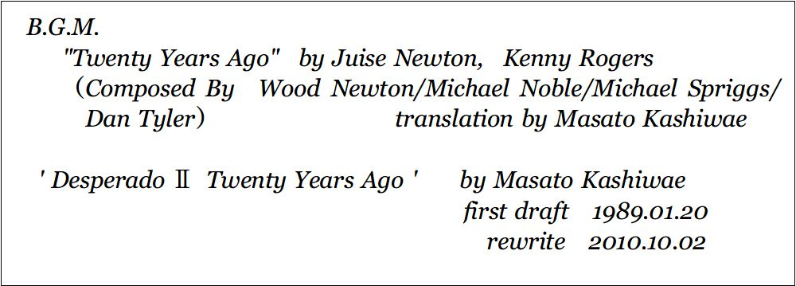
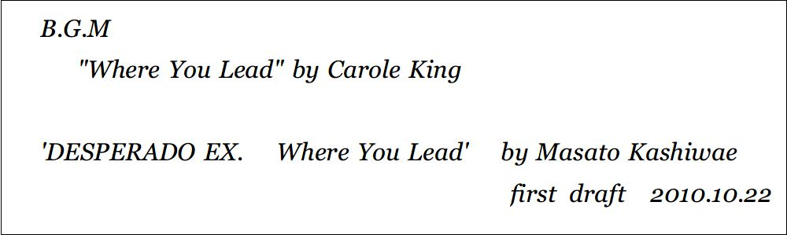

| ACORN vol.2 DESPERADOⅡ: Twenty Years Ago | |
| 柏枝 真郷 | |
| (2018) | |
柏枝真郷
クラーク・デラウェア（デス）.........私立探偵
アンソニー・フォーセット（トニー）
.........その恋人兼助手
バーク・バーンスタイン.....................依頼人
ステラ・バーンスタイン...............バークの妻
ジョージ・キャラハン........................依頼人
ジョイス・キャラハン............ジョージの息子
ハンナ・キャラハン..................ジョージの妹
マギー・キャラハン......ジョージの妻（故人）
ジョン・スミス
............私立ウッドワード小学校教師
カール・ロイヤル.........同
ヘンリー・アンダースン...............37分署署長
フランク....................................37分署刑事
ピート..........................................同
リタ..............................女になりたかった男
マンディ...........................同
ルイーズ・デラウェア...クラークの妻（故人）
ジェニファー・スミセラム..................受付嬢
ジェローム・スウェイン.....................弁護士
横殴りの雨だった。
雑居ビルとビルとの隙間に入ると、雨粒が風に舞い上がり、煽られ、吹きつけた。雨樋を伝い落ちる水流はとどまることを知らず、アスファルトの窪みに水溜まりをつくった。
視界は水煙にかすむ闇だった。雨音の背後に、子猫の鳴き声が聞こえた。
クラーク・デラウェアはうんざりしていた。とにかく、ずぶ濡れだった。コートの衿から入り込んだ水は下着まで濡らし、靴の中では足が泳いでいた。そしてクラークは幾度めかになる自問自答を繰り返していた。
問、なにゆえ、このような悲惨な状況に耐えねばならないのか？
答、仕事だから。
仕事
浮気女房の見張りが？ それでも私立探偵の仕事なのだ。
「家内が......」
そういったきり絶句した依頼人、バーク・バーンスタインの顔を思い出す。
見るからに実直そうな男だった。大手電機メーカーの中堅社員だという彼が、紹介状を握りしめ、青ざめた顔を震わせながらクラークの探偵事務所を訪れてから、早くも一週間が経った。断り切れず、ついつい引き受けてしまったものの、依頼人の妻は研いだ爪を深紅に塗り、夜ごとに着飾って外出し、遠慮なく逢瀬を重ねていた。
今夜もこの雨の中をいそいそと出かけ、クラークも仕方なく尾行してきたのだが、浮気女房が出てくるまで、ひたすら待つしかないのが情けない。六フィート四インチの長身は、何の役にも立たず、煙草を吸いたくても雨では無理だ。夫婦間に吹き荒れる秋風に巻き込まれ、十月の夜にひとりぼっちで雨に打たれているのも、すべてパンを買うためだった。
腕時計が十一時過ぎだと告げている。仕事さえなければ、今頃は
クラークは恋人を思った。
名前はアンソニー・フォーセット。れっきとした成年男子だが、まぎれもなくクラークの恋人だ。誕生日も正確な年齢も知らない。二十代前半だというのは知っている。男娼だった過去があるのも知っている。
さらさらの黒髪に玲瓏な宝石のような緑の眼。きめ細かな顔立ちで、それと同じくらいきめ細かな肌の持ち主だというのも、ベッドに入るたびに思い知らされる。クラークの助手を含む数々のバイトを掛け持ちし、大学の聴講に朝早くから出かけていく。
今朝方、大学に行く前にアンソニーが言った。
「探偵の必須条件、その一。なにがなくともまず忍耐。でも、その助手兼恋人にも、それが要求されるとは思わなかった。『靴屋の息子はいつも裸足（The shoemaker's son always goes barefoot）』って、ことわざ知ってる？」
まばゆい朝陽に黒髪を輝かせた恋人は、細い鼻梁で陰になった乳白色の横顔を斜めに構えてクラークを見上げた。その姿に夢見心地になりながらも、
「頼むから寝かせてくれ。昨夜も遅かったし、俺は眠いんだ」
バスローブをひっかけただけの寝ぼけ姿でクラークがぼやくと、アンソニーはうすら笑った。
「例えば、浮気調査をしている探偵の恋人が、実は浮気をしてました、なんてこと」
「......冗談」
クラークが思わず目を剥 くと、アンソニーは破顔してキスをした。
「ちょっとした警告。でも安心してていいよ。僕も忍耐してみせよう」
耳元でささやき、もう一度キスをしてから、恋人は鮮やかに身を翻し、コットンシャツとジーンズに包まれた細い体をドアの向こうに消したのだった
......。
雨の中に、ふたたび子猫の鳴き声が聞こえる。みゃあみゃあと、か弱い声で鳴いている。あれは親猫を捜し求める声なのか。
街灯すらない狭い路地裏は、雨しぶきのシャワーに打たれて遠いイルミネーションがぼやけ、コンクリートのひび割れだけが浮き出され、どす黒い裂け目が巨大な蜘蛛の巣にも見えた。
不思議なことだ。こんな淋しく冷たい雨の夜に、朝のまぶしい光景を思い出すなんて。暖かく泣きたいほどの幸福が、今、クラークにはあるのだ。
きめ細かなのは、アンソニーの外面だけではない。その心もそうだった。辛辣な台詞は愛情の裏返し、クラークを攪乱させたがるのは不安を掻き消すためだ。クラークにもアンソニーにも肉親はいない。クラークにはかつて妻がいたが交通事故で死んだ。今日の幸福が明日も続く保証がないのを、二人とも知っていた。
......みゃあ......みゃあ......。
雨と闇に隠され、子猫の姿は見えない。雨音に覆われ、泣き声も消えそうだ。
親猫よ、早く出てこい。早く早く、子猫が捜しているのがわからないのか。
......みゃあ......みゃあ......。
浮気女房よ、早く出てこい。そしてさっさと亭主のもとへ帰れ。不貞だ不倫だと責める気はない。俺は早く帰ってアンソニーを抱きしめたいんだ
クラークのうんざりは、苛立ちに変わっていった。
ふいに、高いブレーキ音が響いた。続いて何かが衝突した轟音
クラークは咄嗟に振り向き、走り出した。
路地裏を抜け、表通りに出ると、青いセダンが反転するのが見えた。タイヤがスリップし、水しぶきを上げる。しぶきの中、ピンク、赤、黄、青、その他とりどりの色が散布する。倒れているのは人間か
クラークは走った。靴に溜まった水がぼこぼこと音をたてるのもかわまず、走った。青いセダンは水しぶきを撒き散らし、走り去ろうとしている。追いかけても無駄だ。クラークは地面に倒れた人影に走り寄った。
少女だった。十代半ばだろうか。幼さを残し、あでやかな女性に変わろうとするその狭間
ポニーテールにした金髪がほつれて貼りつく顔は、泥水に汚れていた。水色のレインコートの下に着た純白のワンピースも泥だらけだ。周囲には茎と花びらが飛び散った花束の残骸が散乱していた。
ほどけかかった赤いリボンが結ぶ花束の枝を、握りしめたままの手。クラークは屈み込んで少女の手首を握り、脈を捜そうとしてみた。汚れた顔に手を翳し、呼吸を確かめようともしてみた。しかし
少女はこときれていた。
風に煽られたのか、赤い傘が離れてぽつんと落ちていた。降り続く雨が少女を濡らし、花びらを濡らし、クラークを濡らした。
背後から足音が聞こえた。クラークが振り向くと、路地裏から出てくる人影が見えた。
クラークは立ち上がり、その人影に向かって怒鳴った。
「ミセス・バーンスタイン！ 警察に通報してください。轢き逃げがあった、と」
依頼人の明日は知らない。
雨は降り続いた。
......みゃあ......みゃあ......。
「それで、あんたは仕事を棒に振ったわけだ」
アンソニーが呆れ顔で言った。クラークは黙って煙草をくわえた。タオルで髪を乾かしながら、ただ煙草をふかす。恋人が呆れるもの無理はない。浮気調査対象の当人に面と向かって、自分から名乗りを上げる私立探偵はめったにいないだろう。いるとしたら、よほどの間抜けだ。
あの浮気女房、ステラ・バーンスタインも「轢き逃げ」という緊急事態が目の前になければ、その研いだ爪でクラークの顔に引っ掻き傷を作ろうとしたことだろう。今頃、可哀想な依頼人がどうなっているのか、クラークは想像しないことにした。
通報に飛んできたパトカーの制服警官たちも、事情聴取の途中で笑いを堪えていた。あまりにも滑稽な状況だったが、散った花びらに囲まれ、雨に打たれて死んだ少女を思えば、ただ哀しいだけだ。
アンソニーがパーコレーターからコーヒーをカップに注ぎ、差し出した。クラークはタオルから手を離してカップを受け取った。
狭いダイニングキッチンは、熱いシャワーを浴びたばかりのクラークから立ち上る湯気と煙草の煙、それにパーコレーターがたてる香ばしい蒸気で暖かく湿っていた。
クラークはバスローブ姿で椅子に腰掛け、黙ってコーヒーを飲んだ。遠くで雨音がする。あの子猫はどうしているだろう。
つっ......と、アンソニーの細い指が、クラークの首筋に触れた。濡れた枯草みたいな髪をしばらくもてあそんだ後、首筋から首にかけられた極細のチェーンを辿り、チェーンに通されたプラチナの指輪に触れる。
「......ルイーズさん......。轢き逃げだった？」
耳元で響くアンソニーの声
ためらいがちの声は、かつて結婚指輪だったリングを転がす指先と同じく、かすかに震えていた。
「いや......」
クラークはカップをテーブルに置き、アンソニーの指を手で包み込んだ。「それどころか、轢いた車の持ち主は、ルイーズを病院に運ぼうとしてくれたよ。だが......手遅れってのは、よくあることだ」
もう二年以上も前のことだ。クラークは当時、このイーストリバー市の三十六分署に勤める刑事だった。ある日、相棒の刑事が何者かに射殺されたのだ。おりしも市警本部の上層部に政治がらみの人事異動があり、その余波が末端の各分署にまで波及しているさなかだった。
統制が乱れ、捜査網も混乱していた。警官が殺されたとあれば、新米警官からベテラン刑事まで、市警の全警官が犯人を追う「伝統」もあるのに、所轄署の新署長はその伝統さえも無視しようとした。つまり、所轄外だったクラークたちの協力を拒んだのだ。
殺された相棒は、どうして刑事になったのかと不思議に思えるほど穏やかで争いを好まぬ男だった。残されたのは年老いた母親ひとりだけだ。
あれほど犯人を憎いと思ったことはない。一刻も早く逮捕したい一心で焦り、捜査しか念頭になかったクラークは、いつしか妊娠中の妻ルイーズが待つ家へ着替えに帰るだけの毎日になっていったのだ。
ルイーズは、置き去りにされても愚痴をこぼすような女ではなかった。それに甘えていたのかもしれない。しかし、運命の日
クラークが病院に駆けつけたとき、ルイーズはもうこの世にはいなかった。お腹の赤ん坊と一緒に。
泣きながらあやまる加害者は、平和な家庭の良き父親であり、勤勉な会社員だった。営業の仕事を放り出し、得意先を袖にしてまで付き添ってくれた彼が、ほんの一瞬の脇見運転を悔いる声を聞きながら、クラークは霊安室に横たわる妻の亡骸を、呆然と見つめるしかなかった。とても現実とは思えぬ現実
あれから二年
今、クラークの手の中にも現実があった。アンソニーの手だ。温かく、脈打ち、生きている人間の手だ。クラークはその温かさを握りしめ、尋ねた。
「今
何時だ？」
「午前二時」
「今日の講義は何時から？」
その問いに、アンソニーがクラークの前に回り、軽く膝乗りになると、緑の瞳でのぞきこんだ。
「今日は休講なんだ」
「......自主休講か。ありがとう」
クラークはアンソニーに口づけした。アンソニーの両腕がクラークの首に絡みつき、クラークの両腕がアンソニーの背中を抱きしめる。
それから二人は、互いの生命を確かめに、寝室へ行った。
生命の炎が燃え、その熱さを抱きしめる。何度か爆発し、静かにともる残り火の温かい余韻の心地よさに、クラークは安らかに眠った。
目が覚めたのは、午後五時過ぎだろうか。ベッドにアンソニーの姿はなかった。上半身を起こし、カーテン越しの夕映えに紅く染まった寝室を見回してみる。
四階建てコンクリート造りのおんぼろアパートの、その二階。一階一世帯式で、三、四階は空き家だ。倒産して夜逃げした不動産屋が事務所に使っていた一階と、住居として使っていた二階を、居抜きで借りている。
アンソニーが同居するまではゴミ捨て場も同然だった。今は「たとえ仮の住まいであれ、最低限の秩序と清潔さを保持すべきだ」という彼の主張により、人間が生活するに相応しい空間に変わっている。
あの茶色のカーテンもアンソニーがガレージセールで掘り出してきたものだ。厚手のフランネル地でしっかりと仕立てられているから、あと十年はもつだろう。化粧合板の剥げかかった家具を修理し、配置を変え、引き出しの中身をいったん全部出して、一部は捨て、あるいは洗濯し、新しいタオルやリネン類を揃えたのも、アンソニーだった。
アンソニーが現れ、クラークを変えた。生きる屍が人間に戻った。クラークは何もしない。ただ愛するだけだ。未練と後悔の象徴でもある結婚指輪を未だに外せないまま
それでもいい、とアンソニーは言った。
カンカン、と表の鉄階段を踏み鳴らす音が昇ってくる。立てつけの悪い玄関ドアを開ける音が聞こえ、小走りの足音が近づくとドアが開き、アンソニーが顔をのぞかせた。
「あ、起きたんだ。どうする？ 事務所に電話が入ってるよ。ミスター・バーンスタインから」
「......どんな感じだった？」
「戦い済んで日が暮れて、とにかくあとは休みたい。あんまり喋ると、顔の引っ掻き傷が痛いんだってさ」
アンソニーが大袈裟に顔をしかめてみせる。クラークは溜息をついた。
「仕方がない。したことの責任は自分で取るさ。こっちに繋いでくれ」
「もう繋いである」
アンソニーがサイドテーブルに載った電話機を指さした。一階の事務所から転送されてきたことを示す呼び出しランプが点灯している。
この多機能電話機も、アンソニーがどこかのガレージセールで掘り出してきたものだった。倒産した企業のオフィスで使っていた電話機だとかで、一階の事務所と二階の寝室との間で相互に電話回線を切り替えられるし、事務所の電話機には留守番機能までついている。
「おまえは本当にいい助手だよ」
クラークはもう一度溜息をつきながら受話器を取り、通話ボタンを押した。「デラウェアです」
「ミスター・デラウェア？ 礼を言うよ。ありがとう」
疲れ切った声が流れてきた。だが、ありがとうとは？ 皮肉でもなさそうだ。「これで家内と離婚できる。なにしろ、現場を捕まえたも同然だ。私もこれだけ引っ掻かれれば、良心の呵責を感じなくて済む」
現行犯か。問答無用で即逮捕。警察用語が一般市民にも広がっているのは説明不要で手っ取り早いが、電話回線の向こう側でも依頼人が溜息をついている。
「顔の傷の具合はいかがです？」
「あ、まあ数日で治るだろう。それより家内から聞いたのだが、大変だったそうだな。轢き逃げされたのは、まだ十代の少女だとか？」
「
ええ」
「気の毒に......。親御さんはさぞかし辛かろう。私にも十歳の息子がいてな......。これから彼に打ち明けなければならん。離婚する、とね」
「親権は、どちらが？」
「できれば私が......。もちろん息子の意見を尊重するつもりだが」
「......選択できればいいですが」
「ああ......そうだな。カウンセラーにも相談せねばなるまい」
バーンスタインはしばし息子のことで悩んでいるようだったが、規定料金プラスαを銀行口座に振り込むと言って電話を切った。
クラークは三度めの溜息をつき、のろのろと受話器を戻した。電話の横に置いてある煙草の箱に手を伸ばしていると、
「先に何か着たほうがいいと思うけど。風邪引くよ」
アンソニーの声が飛んできた。クラークが顔を上げると、こころもち小首をかしげた美しい顔が見えた。
「そうだな。バスローブはどこに行った？」
ぼそぼそつぶやきつつ、周囲を見回していると、シャツとジーンズが飛んできた。
「もう洗濯して干した後。明け方まで体力が有り余ってたのに、どうしたのさ。まだ三十歳だろ？」
「体力でなく気力の問題。おまえは若くていいよ。......どうせなら下着も出してほしい」
「了解」
アンソニーがチェストから下着を出し、クラークに投げつけた。「七歳しか違わない」
「......二十三歳か」
「クリスマスが来れば六歳差」
「めでたい日に生まれたんだな。だが残念、俺のほうがその前に歳を取る。十一月一日」
「万聖節？」
「そう、死者の霊が帰ってくる日」
クラークはベッドから出て、のそのそと服を着た。あらためてベッドの端に腰掛け、煙草をふかしていると、アンソニーが隣に座る。しばし口を閉ざしていたが、つぶやくように歌い出した。
Life was so much easier
Twenty years ago
人生はもっと気楽だった
二十年前には
なぜか懐かしさを覚えるメロディだった。カントリー・ソングだろうか。どこかで耳にしたことがあるのかもしれない。
「なんて歌？」
「『Twenty Years Ago』
この前、ラジオでかかってた。二十年ぶりに捨てた街に帰ってきた人の歌」
「二十年前......俺は十歳か。気楽だったかなあ？ バーンスタインの息子には受難の年になりそうだが」
「......離婚するわけ？」
「そうらしい。まあ、よくある話だ」
うなずいてから、クラークは陽気な声で言った。「喜べ、仕事は棒に振らずに済んだぞ。調査料を払ってくれるとさ」
しかし、アンソニーは表情を曇らせたままだ。クラークの腕を取り、頬をすり寄せる。
「あのさ......あんた転職したほうがいいかもね。絶対に探偵に向いてない」
「
そうか？」
「探偵の必須条件、その二。非情さ。ハードボイルドってのは、やっぱり必要なんだと思う」
「俺がハードじゃないって？」
「でなきゃ、僕はここにいないよ」
なぜか、とても頼りなげな声だった。
「......トニー？」
クラークは思わずアンソニーの顎に手かけて顔をのぞきこもうとしたが、アンソニーは顔を背けて立ち上がった。
「それがハードでない、って証拠。いや、違う。あんたの『ハード』は、仕事が辛い 、のハードだね。まるで殉教者だ」
壁に向かって怒鳴り、クローゼットを開けてカーディガンを取り出す。「浮気しに行ってくる」
「......冗談だろ？」
「本当だよ。リタのところへ行くんだから」
通称リタ、近所に住んでいるが、本名は誰も知らない。女性名だし、見た目も女性だが、実は男だ。いや、内面は並みの女性よりも女性らしいかもしれない。とにかく勤務先はゲイバーだ。
「トニー......」
クラークが慌てて立ち上がると、カーディガンを羽織ったアンソニーがくるりと向き直り、笑った。
「あんたも慣れないね。僕とリタじゃ、どっちが上になるか相談してるだけで日が暮れるだろうに。もっとも僕は女とも寝られるけど？」
「
悪い冗談だ」
「忍耐あるのみ」
アンソニーがくすくす笑いながらクラークの頬にキスをした。「実はリタがね、ピアノ弾きのバイトを紹介してくれるって言うから」
「ゲイバーで？」
「普通のレストランだよ。あんたの恋人の貞操は、あんたの貞操による。頑張って適性のない探偵稼業に励むこと」
「助手の仕事は？」
「臨時休業」
とびきりの笑顔を見せたアンソニーは、もう一度クラークの頬にキスし、寝室のドアから飛び出していった。あとに残るはクラークひとり。
ふりまわされっぱなしだ。猫かぶりは得意だと言っていたが、遠いコートランド郡のサンセットポイントという田舎町で出会い、この街に連れてきてから早くも二ヶ月。良家の子息ふうだった第一印象はすっかり影をひそめてしまった。
水を得た魚のように街に馴染んでいるのは、アンソニーが子供時代を過ごした街に似ているからだろうか。
クラークは長い脚でキングサイズのベッドを飛び越えると、カーテンを引き、上下開閉式の窓を開けた。カンカンと鉄階段を踏み鳴らす軽快な足音とともに、オフホワイトのカーディガンを翻して走り去るアンソニーの後ろ姿が見える。癖のない黒髪に夕陽が映えて、まぶしい。錆びた鉄パイプやゴミバケツにも生活の彩りをもたらす紅い光が、古ぼけたコンクリートの壁を染めている。
イーストリバー市西区ユアランド四丁目八番街
通称ミラクルロードと呼ばれるこの街は、これから働きに出る人たちが住む街でもあった。
脂粉と安物の香水の匂いをまとい、まがいものの宝石とスパンコール煌めくドレスに身を包み、こころなしか疲れた足取りで街を出ていく。七割が女性、そのうち二割がまがいものの女性、かれらが得ようとしているのは金なのか、生活の糧なのか、クラークは一度でいいから尋ねてみたいと思っていた。まだ訊いたことはないが。
いつ雨があがったのか
街路はすでに乾いていた。うらぶれた街を冷気が風に乗って、枯葉を撒き散らしながら吹き抜けていく。沈む夕陽が揺れて見えた。
クラークは窓を閉め、煙草の箱を手に寝室を出た。居間とキッチンが並ぶ細長い廊下を辿り、玄関から出て鉄階段を降りる。一階の事務所には看板など出ていない。そっけない鉄のドアに「デラウェア探偵事務所」とプレートがついているだけだ。
ドアを開けようとして、鍵が掛かっているのに気づき、己の間抜けさに軽く舌打ちする。以前は、鍵も掛けずにほったらかしにしていたのだが、アンソニーが助手になってから、きちんと施錠する習慣になったのだ。
すごすごと二階へ戻り、寝室のサイドテーブルから鍵を取ってまた階段を降り、鍵で事務所のドアを開けて中へ入る。壁のスイッチを入れると、がらんとした土間を照明が照らし出した。
いや、これでも、アンソニーのおかげで、かなりまともになったのだ。掃除も行き届いているし、夜逃げした不動産屋が使っていた机やキャビネットも埃が払われ、書類もきちんとタイプされて整理されている。
助手としてはまさに万能
もともとサンセットポイントでは医学部教授の助手を三年も務めていたのだから、この程度は朝飯前なのだろう。おまけに、育ての母が場末の歌姫だったとかで、歌も歌えればピアノまで弾ける。料理や掃除といった家事もこなせる。
足りないのは、せいぜい大学の学位だけだが、これも現在は、市内の幾つかの大学で聴講生をしながら、専攻科目と受験先を模索中だ。
あの夏の夜
（俺と一緒にイーストリバー市に来てくれないか）
クラークがアンソニーの腕を取って口にした言葉
それはプロポーズも同然だった。いや、亡き妻、ルイーズにプロポーズしたときと比較はできないが、真剣さは同じだったと思う。
別れたくなかった。出会ってからたった二日で、心の奥まで入り込んだ。
（僕が男でも？）
（まだそれを言うのか？ それなら、俺も男なんだが）
アンソニーが男なのも関係なかった。かつて男娼だった過去も関係なかった。
ただ切実にアンソニーが欲しかった。心も体も
一時的な衝動ではなく、何度も考えての決断だった。そしてここへ連れてきた。助手としても恋人としても、クラークには分不相応なほどだ。
（頑張って適性のない探偵稼業に励むこと）
アンソニーの声を思い出し、クラークは苦笑しつつ机に載った多機能電話機に眼をやった。留守番電話のスイッチをオフにしてから、たまには真面目に仕事をしようと机の前に座る。
まずはバーンスタインの一件を片づけるべきだろう。調査費用を振り込んでくれると言ってくれたが、まだ報告書も書いていないのだ。苦手なタイプライターに手を伸ばそうとしていると、電話のベルが鳴った。
あらたな依頼人だろうか。受話器を取ると、
「ジェロームだ」
威厳の塊のような声に、クラークは溜息をついた。ジェローム・スウェインはルイーズの父であり、法曹界では高名な弁護士だ。さらには仕事の依頼や斡旋までしてくれる奇特な人物でもある。クラークは受話器を握り直した。
「ええと、ミスター・バーンスタインの件なら
」
「聞いた。おまえを紹介して正解だったようだな」
「......皮肉ですか？」
「そんな暇はない。今ここに、おまえを紹介したい依頼人がいる。三十分以内に来られるか？」
「どんな恰好でもいいのなら」
「かまわん。恥をかくのは私ではなく、おまえだ」
一方的に用件だけを告げて電話が切れた。いつもなら反抗するところだが、雨の中で浮気女房の見張りをするよりマシな仕事かもしれない。
クラークは事務所を出て、二階の寝室へ戻った。メモ用紙にアンソニーへの伝言を残し、すり切れた革ジャンを羽織って外へ出た。
摩天楼の底をオレンジ色に染めながら薄紫の闇に溶け込もうとしている残照が、市の東側を流れる川面にも映えている。さざ波の陰影が濃くなり、浪々とした流れだけを見ると、さながら現代版「神々の黄昏」
世界中が燃え尽きる寸前の残り火のようだ。
そんな錯覚に陥ってしまいそうなほどの眺望を誇るのが、ルイス＆スウェイン法律事務所だった。旧市庁舎の跡地に建つ高層ビルディングの最上階、全面ガラス張りのオフィスに入ると、いつものとおり受付デスクに座った赤毛の女性が、クラークに微笑んだ。
「こんばんは。ミスター・デラウェア。お待ちかねのようだから、『遅れて申し訳ありません』って態度で入っていったほうが無難だと思うわ」
「ご忠告ありがとう。『三十分以内、というご要望を十五分に短縮して来ました』って態度じゃまずいわけだ」
クラークが肩をすくめてみせると、受付嬢は眼だけで笑って編み棒を動かしはじめた。小さな靴下が間もなくできあがりそうだ。数ヶ月前の流産を乗り越え、新たな生命を授かったばかりらしい。母性本能の逞しさは男にとって驚嘆するしかないものだ。クラークは素直に感心しながら奥のドアに向かった。
ノックをしてからドアを開けると、今度は牧歌的叙情に満ちた空間が広がる。のどかな田園風景を描いた三枚続きの絵画パネルが正面の壁にかけられているのだ。そして今、座り心地の良さそうな革製のソファから立ち上がった恰幅のいい男が、この部屋の主、ジェローム・スウェインだった。
「よく来たな」
いつもと変わらぬ慈悲心に満ちた笑顔だ。殉教者と形容するなら、この男のほうが相応しいと思う。人生の深さを示す白髪を後ろに撫でつけ、他人の利益を守るために全力を傾ける男
つねに地に着いた足と、揺るぎそうもない自信に満ちた体を包むのは、深い紺色のスーツだ。聖職者のガウンを着ても、さぞかし似合うだろう。
だが、それがクラークの反抗心を煽るのだ。彼のようには決してなれないから。
「遅くなりまして」
わざと見え透いた挨拶を返したのだが、ジェロームは取り合わず、向かい側のソファに座った客の前へと突き出した。
「ミスター・キャラハン、ご紹介します。彼がクラーク・デラウェアです」
「......君が......」
つぶやきながら立ち上がった客は、クルーカットのまま白髪になったような男だった。太鼓腹を隠すスーツはトラディショナルな形だ。しかし、仕立ての良さとは裏腹に肩のあたりがだぶついて見えるのは、最近になって痩せたからだろうか。
さらに、泣き腫らした眼をしていた。哀しみに打ちのめされたまま、二度と立ち上がれそうもない体を、無理に立たせたようにも見える。
「デラウェアです」
クラークが名乗ると、
「......君がそうか......。どうも......ありがとう」
男は感極まったように言葉を詰まらせながらクラークの両手を取って握りしめた。唐突な愁嘆場にクラークは戸惑うしかない。
「昨夜、おまえが目撃した交通事故の被害者は、キャラハン氏のご子息なのだ」
ジェロームが横から助け船を出してくれたが、
「ご子息？」
少女だったはずだ。なにか勘違いでもしているのだろうか。
「......みっともない話だが......あれは私の息子なのだ。どうしてあんな恰好をするようになったのか......勝手に家を飛び出して......」
キャラハンが悲嘆に暮れながらも打ち明けた話によれば、あの少女、いや少年はジョイス・キャラハン、十六歳。十四歳で家出をしたまま行方不明になっていたのだという。
着ていた純白のワンピースは亡き母の形見で、家出をする際に持ち出したらしい。仕立て屋のネームが入った縫い取りから警察が照会し、キャラハンは二年ぶりに親子の対面をしたのだった。ただし
霊安室で。
「ジョイスがどこでどうしていようと、もう、構うまい......そう思っていた。どこで野垂れ死にしようと、あれはもう私の息子ではないのだ、と......。それなのに、最後の最後まで他人様に迷惑をかけて......本当に申し訳ない」
「待った。ちょっと待ってください。迷惑って？」
「警察から聞いた。自分の仕事に不利になるのを承知で通報してくれた、と」
「待った。俺はそんなつもりは......」
クラークは慌てた。やっと愁嘆場の理由がわかったが、勘違いもいいところだ。
「クラーク」
ジェロームが口を挟んだ。「キャラハン氏はおまえに、ご子息の生活状況を調べてほしいそうだ」
その場に相応しい、沈痛な声音だった。キャラハンが再びクラークの手を握る。
「ジョイスは身元を示す物をなにひとつ身につけてはいなかった。仕立て屋の縫い取りがたったひとつの手がかりで......。警察に言わせれば、それだけでも運が良かった、と。犯人逮捕の見込みは少ないとも言われた。それも仕方がないのは承知している。凶悪犯罪が頻発しているのに、轢き逃げ犯を追う余裕など警察にはないだろう。だから犯人を捜してくれと頼むつもりはない。ただ、私はジョイスの父親として、あの子が家を出てから昨日までの二年間、どんな人生だったのかを知りたいのだ」
知ったところでジョイスが生き返るわけでもない。しかし、十六年の短い人生をなかったものとして忘れてしまうこともできない。
キャラハンの声には後悔が滲んでいた。そうして、忘れることもできず、後悔し続けて余生を送るのだろうか。クラークはやりきれない思いで答えた。
「もしかしたら、忘れてしまったほうがよかった
そんな調査結果しか出ないかもしれませんよ」
「かまわん。どんな結果であろうと、私には親として知る義務がある」
「金と時間の浪費になるだけかもしれない」
「資産はある。そして時間は
もう私には待つしかないのだ」
何を待つのか。調査結果か、自分自身の人生の終わりか。
キャラハンの身なりも物腰も、裕福な家柄を示すものだった。しかし落ち窪んだ眼を赤くし、無精髭でざらついた顔を上げ、クラークにすがる姿は、息子を亡くした悲哀のどん底から救いを求める無力な父親でしかなかった。
どうして俺にはこんな絶望的な仕事しか回ってこないのだろう
クラークは内心で溜息をついた。家出をして大都会の雑踏に紛れた末に死んだ人間の、その生前を調べるなんて、大西洋に落ちた雨の雫を数えるようなものではないか。
それでもクラークは、こう答えるしかなかった。
「やってみます」
ジョイス・キャラハン。一九七×年七月七日、サイレントプレア市に生まれる。
父、ジョージ・キャラハン。母、マギー。キャラハン家は東部でも屈指の資産家で、ジョージはアイビーリーグの名門校を卒業後、一族の財閥で重役職まで順調に出世したのち独立、証券取引で財産を築く。現在は同市にある私立ウッドワード小学校の理事長を務める。
「株屋が小学校の理事長？」
クラークは書類から顔を上げた。「なにか理由でもあるんですか？」
ジェローム・スウェインのオフィスには夜が訪れていた。キャラハンが着手金の小切手を押しつけ、滞在中のホテルに帰っていってから約一時間
クラークの周囲にはひっきりなしにふかす煙草がたちこめている。
「少々、特殊な学校らしい」
煙に顔をしかめながらジェロームが答えた。「ディスレクシアという言葉を聞いたことは？」
「ああ......少しだけなら。学習障害の一種でしたか。知能などの発達にはまったく問題がないのに、なぜか文字を読んで理解することができない」
「よく知ってるな」
「これでも大学時代に教職課程に片足つっこんだことがあったので。反面教師にしかなれないと悟ったので、早々に止めましたが」
「それは初耳だ。では、悟らなければ、今頃どこかの学校で教鞭を執っていたわけか」
鷹揚に笑いながらジェロームが説明を続けた。「では、ひととおりの基礎知識はありそうだな。私もそれに関する訴訟を扱ったことがあるので、多少はわかるのだが......。おそらく、ただ物の感じ方や、脳の発達する分野が違うだけなのだ。異常なわけではなく
そもそもアルファベット二十六文字の組み合わせだけで、言葉を表現できている英語のほうが、奇蹟なのかもしれん。使用する文字が異なる国でも、程度の差こそあれディスレクシアはいるそうだが
ともかく、実際にディスレクシアでありながら、芸術や学術、スポーツの分野で活躍している著名人は多い。トーマス・エディソンやアインシュタインもそうではないかと言われているほどだ。しかし、通常の
大多数の子供に通用する教育では、彼らの才能を伸ばすことができないのが現状だ」
「
ジョイスがそうだったわけですか？」
「いや。ジョイスは公立の中学校に通っていたそうだ。ディスレクシアに似た問題を抱えていたのは、父親のジョージのほうだ。彼は文字は読めたが、一プラス一が二になるのが理解できなかったらしい。しかし、幸いにも彼には熱心な家庭教師がついていた」
「なるほど。家庭教師を雇える家柄も経済力もあった」
「そのとおりだ。そしてジョージは才能を伸ばし、証券取引で成功した。一プラス一を百にも千にもできるようになり、彼自身の財産も築いた。だが、一歩、間違っていたら、劣等生のレッテルを貼られていたかもしれん。そんな思いで援助に出たのだろう」
「
善良な市民の一員として、ですか」
クラークは鼻先で笑い、書類をテーブルに放り投げた。
「気に入らんようだな」
「気に入りませんよ。なにもかも。こんな仕事を依頼されることも、仲介者があんただってことも」
いかにクラークがふてくされようとも、ジェロームは冷静なままだった。
「気に入らない理由は？」
「ジョージ・キャラハンが、ディスレクシアを理解しながら、息子の女装趣味を理解できなかったのは、まだいい。同列に並べて比較するものではないし、キャラハンは後悔している。だが、なぜ、あんたが仲介するんです？ キャラハンはバーンスタインとは違い、よその街の住人だ。いくら法曹界で高名だとて、キャラハンがまっすぐにあんたのもとに来たのは、なぜです？ そしてなぜ、調査するのが、俺なんですか」
クラークは自分の胸を指さした。「ミラクルロードに住んでるから？ 類は友を呼ぶ。女装趣味の男娼も周囲にいるし、俺の恋人が男だから？」
「誤解するな。私はおまえが男を愛そうとホモになろうと、咎めるつもりはない。おまえが自分の意志で選んだことだ。責任はおまえにある。それにトニーは私も気に入っている。むしろおまえにはもったいない相手だとも思う」
「ほう......。ご理解がありますな。では、なぜです？」
「事故現場の所轄署は？」
「あそこは西三番地だから
三十七分署......」
クラークはジェロームの顔を見据えた。「
まさか......」
「そのまさか、だ。ジョージ・キャラハンを霊安室に案内したのは、ヘンリー・アンダースン署長だったそうだ」
「
あいつ......まだ根に持ってるんですか。俺が殴ったこと」
「根に持っているのは、おまえのほうだと思うが」
「コチコチ頭のトンチキですよ。あの署長がつまらん縄張りにこだわったせいで、エディを殺した犯人が挙がらなかったんだ」
エディ・ジャービス
クラークの相棒だった刑事だ。そのエディが何者かに殺されたとき、政治的配慮とやらで天下りしてきたアンダースン署長がやったのは、実質的な捜査妨害だった。殺害現場が三十七分署の所轄内だったという理由で、三十六分署の刑事たちを閉め出したのだ。被害者は三十六分署の刑事だったのに。
手をこまねいたまま、ろくな手がかりも発見できず、時間だけが無駄に過ぎた。そして迷宮入りを覚悟しなければならなくなったとき、ルイーズが死んだ。
運命の皮肉さに、行き場のなくなった怒りが爆発し、クラークは三十七分署に乗り込み、部下の面前でアンダースンを罵倒したうえ殴ったのだ。そしてその足で三十六分署に戻って辞職願を叩きつけ、刑事を辞めた。
もう遙か二年以上も前の
「昨夜、おまえを事情聴取した警官たちが、おまえの間抜けぶりを報告したんだろう」
ジェロームが冷静に説明を続けた。「アンダースンはキャラハンに言ったそうだ。『もしも、どうしてもお調べになりたいのなら、クラーク・デラウエアに頼んだらいかがですか。多少、血の気は多いですが、バックにはスウェイン弁護士がついているし、なによりも、仕事をふいにしてまで通報してくれた正義感の持ち主ですからね』と」
「......全部、皮肉ですよ」
クラークは頭を抱えたくなった。「それを真に受けて......。ったく、どこまで疫病神なんだ。これはもう無理ですな。警察の情報は当てにできない。それどころか邪魔者扱いされるのがオチだ」
「そこをなんとかするのが、プロフェッショナルだろう。私もそうやって不可能と思える裁判に勝ってきたのだ」
ジェロームの声は自信に満ちていた。それを聞くたび、逆に無力感に苛まれる者もいるのだと知っているのだろうか。クラークは黙って立ち上がった。「どうする気だ？」
「引き受けてしまった以上、責任は俺にある。やりますよ」
クラークはドアを開けながら答えた。「だが、憶えておいてください、俺は所詮、ならず者 だと。言ったはずです。俺は反面教師にしかなれない」
そして外へ出た。
晴れた夜空にイルミネーションが瞬いていた。哀しいまでに明るく、なぜか淋しい。
地下鉄付近の売店で、クラークは新聞を買った。売れ残りの夕刊とさらに売れ残った朝刊だ。にきび面の売り子が無造作に引き抜いた弾みで、薄いタブロイド紙が風に飛ばされ、翻りながら枯葉の山をかすめたあと、歩道に落ちた。
途切れることのない人の波が、フットボールの試合結果を踏んでいく。「パワーの激突」
活字が躍り、走り抜けるランニングバックの写真がちぎれ、路上を這う。
だが、どうでもいいことだ。歳月とともに興味あるものが減っていく。
クラークは靴跡に汚れたタブロイド紙から眼を背け、買った新聞を広げた。女装少年も間抜けな探偵も、新聞社は興味がなかったらしい。市の外れで強盗があったそうだ。銃撃戦が二件。
遠くからのサイレンが喧噪を切り裂き、走り抜けた。不夜城の街では、しじまを待つゆとりもないのだ。病気も事故も犯罪も、いっしょくたに九一一の緊急番号で処理される。
クラークは新聞を屑籠に投げ入れ、歩き出した。雑踏の中を歩き、ミラクルロードへ抜ける交差点の前で立ち止まる。
アンソニーはもう帰っているだろうか。レストランの閉店時刻にはまだ早い。そして、類は友を呼ぶ
女装少年の住処
を捜すには、女装が日常になっている者たちに頼むのが手っ取り早いかもしれない。
クラークは西へ向かった。三ブロック先の交差点を渡り、細い路地に入ると、周囲には妖しげな雰囲気が漂いはじめる。ミラクルロードほど朽ちてはいない。だが、廃墟にペンキを塗りたくり、けばけばしいネオンライトで飾りたてた実例のようだ。
思い思いの場所に立つ街娼たちは、この気温にもかかわらずショートパンツから素足をのぞかせ、ピンヒールのブーツで闊歩している。なかにはクラークに合図を送る物好きもいる。安酒と早くも泥酔したのか、酔っ払いたちが吐く汚物の臭いが鼻につく。活気はあっても、道を往く人たちは誰も彼も哀しげに見えた。
路地の奥に、英国の高名な作家の名を冠したバーがある。ただし、看板は末尾の「Ｅ」が欠落しているので「WILD」となっている。看板屋が間違えたらしいのだが、このほうがバーにも客にも相応しいかもしれない。
クラークは地下へ続く石の階段を降り、重い鉄製のドアを開けた。
ようこそ、と声をかける者はいない。ここに集う者たちはゲイ解放のデモ行進に参加する勇気は持ち合わせていない。暗闇にうずくまる心弱き人々が、わずかな薄明を求めてやってくる場所だからだ。
弱い光の中を見回していると、棒きれのように細い体を深紅のドレスに包んだリタが、テーブル席の間を縫って駆け寄ってきた。
「デス、やっぱり来たのね。これで賭けはアタシの勝ち。十ドル儲かっちゃった」
んふふと意味深長に笑ったリタが、クラークの腕を叩く。薄闇に浮き出た白塗りの顔と、喉仏を隠す衿の高いドレスにまといつく髪は、金髪から赤毛に染め変えたばかりらしい。
「賭け？」
クラークが戸惑うと、リタがまた意味深長に笑った。
「トニーなら奥よ。健気にも皿洗いに精出してるわ。ほら、ぼさーっとしてないで、こっちこっち」
いまだ状況が飲み込めないクラークの腕を、リタが引きずるようにして奥の厨房へと連れていく。そこだけは、奇妙に明るかった。
料理人はよく似た、まるまると太った兄弟で、陽気に喋りながら冷凍ピザや冷凍ハンバーガーを電子レンジやオーブンに放り込んでいる。その傍らの流し台には、食器類がうずたかく積まれている。飛び散るシャボン玉の中に、アンソニーの黒髪が見えた。
「トニー......」
クラークの口から声が洩れる。アンソニーが振り向き、グラスを落とした。床に落ちて砕け散る。
「トニー、アタシの勝ちね」
リタが駆け寄ったが、アンソニーは肘まで捲り上げたシャツの袖に洗剤の泡をつけたまま、こわばった顔で立ち尽くしている。クラークは仕方なくリタに声をかけた。
「頼むから状況を説明してくれ。賭けって何のことだ？」
「だから、留守番電話の録音を聞いて、ここに来たんでしょ？」
「留守番電話......？ 俺はジェロームのオフィスからここに直行したんだが」
「え？ じゃあ聞いてないの？」
だしぬけにアンソニーが笑いだした。シャボン玉がはじける中で、流し台に手をつき、小刻みに体を震わせながら笑い転げている。
「......あんたらしいや。そうだね、あんたが留守電のチェックをするわけないか。僕の仕事だから。リタ、残念だったね。この賭けは端っから成立しなかったよ」
「おい、トニー。まださっぱりわからないんだが。第一、おまえは『ピアノ弾きのバイト』だと言ったよな？ 普通のレストランだって。ゲイバーの皿洗いとは」
「あ、違うのよ」
リタが割り込んだ。「ピアノ弾きは、ちゃんと決まったの。二丁目の、ほら、前にエスニック料理店だったお店。オーナーが代わってフランス風のビストロになるんだって。そこのマネージャーがアタシのお得意様なのよ。シャンソンを弾けるピアニスト
できれば客のリクエストもこなせるほうがいいから、譜面なしで弾けるピアニストに心当たりがないか、って言うのよ。それならトニーが打ってつけじゃない？ 実際に今日連れて行って弾いてもらったけど、アタシも感心しちゃったわ。マネージャーが意地悪して、聞いたことないようなマイナーな歌をリクエストしても、あっさり弾いちゃったのよ」
「......そいつは凄いが......」
「で、即決で決まったのはいいんだけど、オープンは来月なのよ。おまけにトニーは『アパートに帰りたくない』ってぐずるし......」
「帰りたくない？」
つい声が大きくなった。しかしアンソニーは顔を背け、床に散乱したグラスの破片を見ている。慌てたのはリタのほうだった。
「違う、違うのよ。ただ、『なんとなく』って......。デス、あんたって感情同調型の探偵なんだって？」
「......感情同調型？」
「そうトニーが言ったの。依頼人の関係者に何かあるたび、一緒になって傷つくから、見てるのが辛いんだって。いつか潰されるんじゃないかって心配で......」
「......トニー......」
クラークはなんと言っていいのかわからなかった。アンソニーは黙って手をタオルで拭い、箒と塵取りを持ってくると、ガラスの破片を片付けだしている。
「だからアタシがここに連れてきたわけよ。でも、あんたにも連絡しておいたほうがいいじゃない？ でも電話したら留守で」
「それで、賭けをした？」
「そう。『WILDにいるから』って留守電に入れて、あんたが迎えに来るかどうか。トニーは拗ねちゃって『来るはずない』って言うのよ。まったく、はた迷惑な恋人たちよね」
リタが笑いながら呆れたように肩をすくめた。アンソニーはゴミ箱の前で、塵取りを逆さに振っている。クラークが近寄っても、アンソニーは背を向けたままだ。つぶやくような声が聞こえた。
「......ガラスの細かい破片が塵取りにくっついちゃって落ちないな」
クラークは背後からアンソニーを抱きしめた。アンソニーの手から塵取りが落ちる。
いつのまにか料理人兄弟と、リタの姿が厨房から消えていた。
カーテンの隙間から射し込む朝陽が、乳白色の頬を明るく染めている。微笑みを浮かべて眠るアンソニーの寝顔は、子守歌を唄いたくなるほど幼くも見えた。
さらりと枕に落ちた黒髪は艶やかで、前髪が乱れ、形のよい眉とピンク色のまぶたがのぞいている。細い首筋から続く肩は鎖骨が浮き出て華奢にも見えるが、ひ弱さはなく、すんなりと伸びた腕には、しなやかな弾力が感じられる。
クラークはいつしか瞬きもできず、うっとりと見とれていた。肩の毛布を掛け直そうと、そっと手を伸ばしたとき、アンソニーが軽く寝返りを打って眼を開けた。
「......ん......？」
「おはよう」
「え？」
緑の眼が大きく見開かれ、毛布を撥ね除けるようにして飛び起きる。「今、何時？」
「七時
五分過ぎだが」
「......驚いた......」
アンソニーが大きく息をつき、ベッドに倒れ込んだ。「寝ぼすけのあんたが起きてるなんさ。遅刻するかと思ったじゃないか」
「目を覚ましたとたん、これだ。昨夜のことでよくわかったよ。おまえが素直なのは、眠ってるときと寝てるときだけだ」
「
あんただってそうだよ」
「かもな。もう一度、素直になってみる気は？」
「それもいいかも......あ、やっぱり駄目。本当に遅刻しちゃうよ」
アンソニーがベッドから飛び降り、バスルームに駆け込む。シャワーの音を聞きながら、クラークは苦笑した。
「残念だ。まあ二日続けて自主休講させるわけにはいかないか」
ぼやきながら寝そべっていると、シャツとジーンズを着たアンソニーが戻ってきて、屈み込んだ。
「あのさ、あんたは探偵の適性がない、ってことが適性なのかもね。性分なんだよ。誰をも見捨てられない」
「それは買いかぶりだ。だが、引き受けた以上はやるしかない。リタが協力してくれると言ってるし......女装趣味の仲間にジョイス・キャラハンの知り合いでもいれば幸運なんだが」
「そうだね。で、あんたは？」
「考えてみた。搦
め手にするか正攻法にするか。で
さっき、おまえの寝顔を見て、ふと思った。つまり
幸運について」
クラークは腕を伸ばし、アンソニーの頬に触れた。「おまえと出会ったのが幸運だと思えるのなら、いつまでも昔のことを根に持っていても仕方がない、とね。アンダースンのトンチキがまだ根に持っているかどうかはさておき、こうなったら真正面からぶつかってやろうかと」
「じゃあ傷薬を用意しておくから」
「願わくば、ベッドの中で」
「もちろん。そうか、探偵の助手って前線基地の看護人でもあるわけか」
「それは、探偵の恋人の役目」
「一人二役か」
アンソニーが微笑み、ゆっくりと顔を落とした。さらさらの黒髪がクラークの頬をかすめ、唇が触れ合う。不思議と雪の匂いがする髪
そうか、クリスマス生まれだからか。
クラークが腕をアンソニーの背中に回そうとしたとたん、だしぬけにアンソニーが唇を離した。
「まずい。絶対に遅刻しちゃうよ」
そしてドアから飛び出していった。
「......素直じゃない奴だ」
置いてきぼりにされたクラークは、笑いながら上半身だけ起こし、煙草を取って口にくわえた。
明るく穏やかな、そして幸福な朝だった。
しかし、同時刻
思いがけないことが起きようとしていたのだった。
西三丁目十五番地の大通りに面して、格調の高いホテル、プラザ・イーストが聳えている。二十世紀初頭に建てられたルネッサンス様式の優美さは半世紀以上を経ても健在で、世界中の大富豪からロックスターまで定宿にしていることが超高級の証明でもある。
最上級のホスピタリティでお客様をもてなすこと
それがこのホテルのモットーであり、従業員の教育も徹底していた。どれほど忙しくても、客のきまぐれで理不尽な要求をされても笑みで応える。
従って、客の一人が前夜頼んだ朝食のルームサービスに返事しなくても、「熟睡しているのだろう」と考え、しつこくベルを鳴らすことは控えたのだった。特に前夜は大企業の祝賀パーティが深夜まで及び、参加客のうち何割かは宿泊客だったから、二日酔いと寝不足の客も多かったのだ。しかし、チェックアウトの時刻を過ぎても客室から出てこないとわかると、客室マネージャーは不審に思った。
何度も電話をかけた末、ついにマスターキーでドアを開けたとき
客は朱に染まって息絶えていた。重厚な大理石のテーブルの角で後頭部を割られ、流れる血の海の中で。
宿泊名簿によれば、客の名前は、ジョージ・キャラハン。
発見時刻、午前十時四十五分。
クラークが、やっとベッドから這い出し、シャワーを浴びていた頃だった。
もしも運命を司る神がいるとしたら、そいつは性格破綻者に違いない。クラークは胸の内で呪詛の言葉を吐きながら、目の前の刑事二人組を見やった。
三十七分署の名物コンビ、フランク＆ピートだ。背丈は二人とも中背。ただし、フランクは標準より百ポンドは多く、雀の巣みたいな頭をしている。相方のピートは標準より五十ポンドは少なく、つるっぱげだ。
ジェロームのオフィスに並んで座ると、ジョージ・キャラハンの遺体発見の顛末を身振り手振りを交えて喋りまくったのち、口をつぐんだままソファから動こうとしない。
「
それで？」
しびれを切らし、クラークが尋ねると、フランクは丸い顔をさらに丸くし、にこにこ笑いながら言った。
「それで？」
「訊いているのは、俺だ。わざわざ法律事務所にまで呼び寄せて、ミランダ警告の練習でもするつもりか？ あなたには黙秘する権利があります。あなたには弁護士を呼ぶ権利があります」
「そうだったから良かったのに」
ピートが哀しそうにうなずいた。クラークは溜息をつき、ジェロームに視線を向けた。ジェロームは珍しく口を不機嫌そうに曲げている。
「ミスター・ジョージ・キャラハンの魂に安らぎあらんことを。他殺と断定されたのか？」
「そういうことになるでしょう」
ピートがまたもや哀しげにうなずいた。「この街では誰もが殺される運命なんです」
「犯人の手がかりは？」
「なあんにもないんです」
間延びした声でフランクが答える。
「物盗りの犯行、あるいは言い争った挙げ句、勢い余って
といった仮説もない？」
ジェロームが忍耐強く尋ねたのだが、フランクとピートは顔を見合わせ、揃って首を横に振った。
「なあんにも」
クラークは面倒くさくなって、正面のパネルを見た。のどかな田園風景の中で、牛があくびをしている。
「旅行者がホテルで殺された。手がかりは何もない。そこまではわかった」
ジェロームが忍耐の根比べを続けた。「それで？ 君たちは何のためにここに来たのかね？」
「さあ？ 署長命令ですから。逆らうわけにはいかなんですよ。クビになると、妻や夫や祖父母や子供たちが......」
ピートの哀れを誘う声に、フランクが相槌を打つ。あくびした牛のそばを蝶々が飛んでいた。
ジェロームが立ち上がった。
「では、帰って署長に伝えたまえ。『なあんにも聞けませんでした』とね」
きっぱりとした声だった。フランクとピートは食い下がっても無駄だと悟ったのか、神妙な顔で立ち上がる。クラークは座ったまま、なおも眼で蝶々を追いかけながら、独り言のようにつぶやいた。
「ついでに。『署長の策が悪かったのではなく、相手が悪かったんですよ』とね」
二人の刑事は、また顔を見合わせると、なぜかほっとした顔で出ていった。ドアが閉まり、約一分後にインターコムのブザーが鳴る。
「そうか、おとなしく帰ったか。ありがとう、ジェニー」
ジェロームが受付嬢に礼を言ってインターコムのボタンから手を離した。試合終了。クラークは蝶々から視線を戻した。
「切れ者の弁護士には、おとぼけコンビですか。悪くはない人選ですが」
「根性のひねくれた探偵にもな。現場に出ず地図の×印を見ながら指令書を書く将校が妙案だと勘違いして打つ手だ。私だったら、わざと手詰まりにしたいときにしか使わんが。決して王手は取れん」
「......憶えておきますよ。もと参謀。国防省がよくあんたを手放したものだ」
「『将を射んとせばまず馬を射よ』
知っているか？」
「......搦め手の戦法ですか」
「今はそのように使われているが、もとは人命尊重のための教訓だったのだ。『人の命にもまた限りあり』と続く。無益な殺生をするな。たとえそれが敵でも、とな。だが現代は、馬に相当する戦闘機を撃てば、将も死ぬ。レーダーに映る光点が消えるたび、断末魔の悲鳴が聞こえるような気がした。私は人が死ぬのを好まん」
「それなのに、刑事弁護士として高名ですが」
「法は諸刃の剣となるからだ。犯罪者も悲鳴を上げる。全員とは言わんが、心の中で悲鳴を上げている犯罪者も多い。それはおまえもわかっているはずだ。四年前、おまえを弁護側の証人として召喚したとき、おまえは刑事でありながら、自分が逮捕した犯人に有利な証言をしようとした。七十歳の、か弱い老婦人を殺害した凶悪犯と地方検事が決めつけたにもかかわらず」
状況は極めて不利だった、とジェロームが四年前を淡々と述懐した。「決定的な物的証拠があったから、私も公判が始まるまでは負けを覚悟していた。苦肉の策で召喚したおまえの証言で突破口が開けたのだ。私の意図を見抜き、私が結論を持っていく方向に沿って、証言してくれた。検察側には、老獪な弁護士に手玉に取られる間抜けな刑事と思わせながら、な」
「......ああ、まあ。地方検事局を敵に回すと、他の捜査がしにくくなりますから」
「間抜けを演じるほうが気楽か」
ジェロームが笑った。「だが、そのおかげで、物的証拠の有効性に疑問があることを陪審員に納得させることができた。審議の流れが被告に有利に変わったのを確信して、私が家に帰ったとき
ルイーズが法廷の控え室で『おもしろい刑事に会った』と話してくれたとき
私はいつか、ルイーズとおまえが結婚するかもしれんと、そんな予感がした」
「買いかぶりです。実際に俺はあんたに手玉に取られた。それに俺の証言とルイーズは関係ない」
「そうだ。今回の件もルイーズは関係ない。問題はおまえ自身だ。おまえはもともとこの件に乗り気ではなかった。さんざんごねて、仕方なく『やる』と言った。そして依頼人が死んだわけだ。おまえはこれからどうする気だ？」
畳みかけるような言葉も鋭かったが、クラークを見据えるジェロームの眼も鋭かった。圧倒されそうなその眼に、クラークは視線を外すことができなかった。
「......俺は先手を取られるのが嫌いだ」
「それで？」
「自分から後手を取るのならかまわない。ときには後手のほうが有利なこともある。だが、不本意に後手を取らされるのは嫌いだ」
「やはり老獪な者に手玉に取られるタイプだな」
やっとジェロームの眼がなごんだ。
「ゲームの話をしてるんじゃない。ことは現実で、人が死んだんだ」
「やっと、本気でやる気になったか」
「もう着手金はもらってる。たとえ依頼人が死んでも依頼は生きている。ジョージ・キャラハンは昨日、この街に来たばかりだ。予定された行動ではなく、息子の死という緊急事態によって。それなのに、誰かが殺して逃げた。ホテルのオートロックシステムが発見を数時間遅らせた。現場の手がかりはすべて三十七分署が握っている」
「それで、おまえは？」
「先手を取ってやる」
「現場以外の場所で、か」
「イエス。おとぼけコンビがここにやってきたのは、三十七分署には、あんたと俺ほどキャラハンについて知る機会がなかったからだ。霊安室に案内し、息子の死を嘆く父親としての対応に終始してしまったから」
そこまで答えたクラークは、いったん息をついてからジェロームを見返した。「不本意だが、この際、あんたに頼むしかない。トニーを......」
「だから、ミラクルロードなんかに住むなと言ったんだ。あんな物騒な街に大切な人間を住まわせられるか」
声は厳しかったが、ジェロームの口元はほころんでいた。「不本意と言われるのは不本意だが、引き受けるとしよう。ちょうどジェニーが編み物に凝っていてな。受付業務には支障はないが、タイプしてもらう書類が溜まっている。臨時タイピストにでも雇うとしよう」
「頼みます。では俺は
」
「どこへ？」
「出発点に」
それだけ答え、クラークは立ち上がった。
サイレントプレア市は人口二十万の小都市だ。精密機器類の工業地帯として発展しているニューデイト市の隣に位置し、通勤者の住宅地として開けていた。
隣の州にあるイーストリバー市からも鉄道路線が繋がっていて、急行でおよそ二時間。サイレントプレア市の中央駅に降り立ったクラークを迎えたのは、こぎれいで垢抜けていてながら、なぜか閑散とした印象を与える街並みだった。
昼間の人口の八割は女子供ではないのか
そう思えるほど駅ビルやその周辺のデパート付近には青年男性の姿が少ない。
クラークは案内所で私立ウッドワード小学校への道順を尋ねてみた。市の外れにあるらしい。タクシーもあるが路線バスのルートでもあると知り、クラークはバスに乗ることにした。
バスの車体は旧型だったが、落書きがほとんどないことに驚く。いや、これが標準なのであって、イーストリバー市の落書きだらけのバスのほうが異常なのだ。車内も乗客が少ないが、単に昼間の利用者が少ないだけだろう。治安の悪さから市民に敬遠されているような危険さは感じられない。
バスの車窓から見えるのも、典型的な郊外型住宅街の風景だった。市の周辺は丘になっているのか、坂道が続き、やがて雑木林を過ぎると、パステルカラーでできた建物と広い校庭が見えてきた。ここがウッドワード小学校らしい。
クラークはバスを降りた。ものものしい鋼鉄製の校門前に警備員の姿が見かけられるのは、どこの市でも同じだ。全米各地で誘拐事件が頻発している現状では仕方あるまい。身分証明書を見せて校長に面会を求めると、出てきたのは丸い眼鏡をかけた小男で、ちょこまか歩く姿がどことなくユーモラスに見えた。
「申し訳ない。校長は不在でして。とりあえず僕がご用件を承ります。理科担当のジョン・スミスです。これが正真正銘の本名なんですよ」
トウモロコシの髭みたいな髪を振りながら、右手を差し出す。同世代の親近感か、私立探偵を前にしても警戒している様子はない。クラークも気軽に握手を交わした。
「校長が不在なのは、理事長が亡くなった都合か？」
「理事長のお知り合いですか」
「ジョージ・キャラハンは、俺の依頼人だ。彼に頼まれて調査をしている最中だった」
「......なるほど」
スミスはさほど驚いたように見えなかった。牛乳瓶の底みたいな眼鏡に手を添え、クラークの顔をのぞきこんでから、ひとしきりうなずく。「悪い人じゃなさそうだ。ええと、応接室と職員室、どちらにします？」
「職員室」
「......ますます結構。ここに来る部外者は皆、応接室に行きたがる。エイリアンの巣と勘違いしているのかもしれないが」
おどけた調子で肩をすくめ、スミスがクラークを促した。
校門を抜けて校内に入る。校舎はお伽の国だった。
ヘンゼルとグレーテルのお菓子の家、カラフルなペンキで具象化されたメルヘンの世界。小人国のガリバーになった気分を味わえるほど天井が低く、ドアも小さい。全体的な印象は、小学校よりも幼稚園に近いだろうか。どれもこれも児童に威圧感を与えないようにと配慮されたものらしい。
この国の王様は児童であって教師ではないんですよ
案内がてらスミスが言った。クラークはうなずこうとして頭を天井にぶつけそうになった。これで五度目だ。
どのドアも解放してあり、授業の様子が垣間見えた。やはり幼稚園の遊戯室に近いかもしれない。机や椅子といった教室にありそうなものは皆無だった。とある教室では、児童たちがそれぞれバスマット大のラグを好きな場所に置き、積み木細工のようなもので遊んでいた。別の教室では、大人もののスーツと付け髭で変装した児童たちが、子供銀行券でウォール街ごっこに興じている。
「まだ試行錯誤です。『この指導方法が正しい』という確定された理論はありません。それはごく普通の学校教育でも同じでしょう」
そんなふうに説明を締めくくりながら、スミスが職員室のドアを開けた。
そこはサンルームだった。ドア側の一面を除く全面がガラス張りの部屋は、雑木林が見えるテラスから天井まで細い枠組みが縦横に組み合わされ、何十枚という板ガラスを支えている。
白木の丸テーブルとスツールが幾つも置かれ、さんさんと降り注ぐ陽光に輝く。それでいて深閑とした部屋の中、トレーニングウエア姿の大男がひとりテーブルにつき、カードゲームに没頭していた。一人遊び か占いか。
「カール、ちょっといいかな？」
スミスの声に顔を上げた男は、いかつい顔立ちにそぐわぬ、濁った眼を向けた。短く刈った髪は褐色の巻毛だ。
「カール・ロイヤル？」
クラークの口から驚きの声が漏れた。他人の空似にしては似すぎている。しかし、男は鈍い反応をしただけだった。つまり、ふたたびカードをめくりだしたのだ。
「フットボールがお好きでしたか」
スミスが小声で言った。「ですが、今の彼はここの体育教師です。一年前から。過去のことは......」
「わかった」
クラークは即座に納得した。ここにも一人、過去を捨てた男がいただけのことだ。穿鑿 はすまい。
カール・ロイヤル
確かに、それほど有名な選手ではなかった。だが、スタジアムのフィールドで、ＴＶネットワークで、大観衆の声援を受けてプレーするプロフットボール・チームの中に彼はいたのではないか。
大柄な体格を活かして突進するパワーバック型のランニングバックで、敵のタックルを敏捷さでかわすのではなく、真っ向から力で突破する姿は、まさに雄姿だった。あざとい小細工や小手先の技巧にはびくともしない、正攻法の頼もしさはフェアプレイの理想そのものにも思えたものだ。一方で、あまりにも馬鹿正直すぎるとか、攻撃が単調になりやすい欠点があるとかいった批判も多かったが、そんな批判すらも跳ね飛ばせるほどの走りっぷりだったのをクラークは今でも憶えている。
二年前に試合中の負傷がもとで引退した、とまでは新聞で読んだ。その後はメディアが取り上げることもなく、消息も不明になっていたのだが
よもや小学校の体育教師になっていたとは。
背の高さは、六フィート四インチのクラークと同じくらいだろう。しかし、今のロイヤルは、筋肉が贅肉に変わり、特大のトレーニングウエアの上からも、だぶついた贅肉がわかるほどの鈍重な姿で、かつてはしっかりとボールをキャッチした手を、ちっぽけなカードゲームに費やしていた。
ここにいるのは、かつてのカール・ロイヤルではない、別人だ
やるせない思いでいるクラークを、スミスが離れたテーブル席へと促した。
「彼もここの児童と同じなのです。ただ彼が児童だった頃、彼の育った環境には、このような教育施設がなかった」
小声で説明しながらスミスがスツールに腰を降ろす。クラークは合点がいった。
「つまり字が読めない？」
「ええ。二年前に怪我がもとでプレーできなくなったのはご存じですか」
「いちおう。その後は引退したとだけ」
「そのとき周囲の視線は冷たかったそうですよ。まさに手のひらを返すようだったとか。スタープレイヤーでもなかったし、後釜は掃いて捨てるほどいる。コーチなどに転職したくても、文字が読めないのがネックで」
「それでここに？」
「もともと、ここには慰問によく来てくれてたんです。ここは都市に近いせいか、各界からの慰問が多いんです。似たような症状に悩んだ経験を持つ、いわゆる同類の方もいれば、ご自分では悩んだ経験はなくても、なんらかの励ましになればと善意で来てくださる人もいる。今でこそ多少は社会的な理解を得られるようになりつつありますが、まだ自分がそうだと、簡単にはカミングアウトできないものでもありますから」
「......だろうな。失礼だが、あなたは......？」
「僕はディスレクシアではありません。ですが
」
スミスが眼鏡を外した。薄茶色の眼が焦点を喪ったかに見える。「ここの児童は今の僕と同じなんですよ。この状態では一フィート先の文字も読めません。いつだったか
交通量の多い交差点で眼鏡をぶつけて落としたことがありましたが......怖かったですよ。人も車もぼんやりと見えることは見えるんですが、それが恐ろしいスピードで行き交っている。騒音がよけい大きく聞こえて
僕は眼鏡を拾うより先に、しゃがみこんでしまいました。ここにいる児童と大差ないでしょう？ 違うのは眼鏡をかければ人並みに見えて文字が読めることだけです」
スミスは焦点の合わない眼をしばたたき、また眼鏡をかけた。説明する声はさりげなく、穏やかだったが、妙な力を感じた。意志の力かもしれない。
「つまり、ここの子供たちも眼鏡に相当するものがないだけなのか」
「そう！ そうなんですよ」
嬉しそうにうなずいたスミスは、また眼鏡の縁に手を当ててクラークの顔を見た。「私立探偵に会ったのはこので二度目ですが、印象が変わりました。やはり職業ではなく、人によるんですかね。二年前に来た探偵は酷いもんだった」
「二年前？」
「ええ、ミスター・キャラハンの一人息子が誘拐されたときに」
「誘拐？ 家出ではなく？」
「家出？ 僕が聞いた話では
」
戸惑ったように眼鏡の中で二つの眼を寄せたスミスが、小首をかしげた。「ミステリですね。そして今度はミスター・キャラハンが......殺されたんですよね？」
「まだ断定はできんが......」
「そうですか。いい人でしたよ、惜しみなく援助してくれて......。ここは営利団体ではないですが、公立でもなく、名目上は私立校の扱いです。さらに、入学を希望する児童は全米各地にいます。通学できるほど近所であっても、コンプレックスがいたずらに刺激される懸念もあるので、全寮制を取っています。要するに、普通の私立校よりも費用がかかるんですよ。保護者の中には我が子のためにと、全財産を担保に入れて費用を捻出している者もいる。だから、彼のような人は本当にありがたかった。どこかに良い教材があると聞けば、自分から飛んでいって買って寄付してくれました」
「恨みを買うような人間じゃなかった？」
「......それは......」
スミスは曖昧に言葉を濁した。「人にはいろいろな面がありますから。ここの理事長としては望み得る最高の人でしたけど」
「本業は株屋か。投機にはリスクがつきものだし、全財産を喪ってしまったり、多額の借金を抱える者もいるだろう」
「......二年前の誘拐事件のとき、僕もそう考えたんですが......」
「誘拐なら警察が動いただろう。二十四時間を経過して州越えの可能性が出ればＦＢＩも動く」
「そんな大騒ぎでは......。ただ、数日後に探偵が来ただけで。理事長の依頼で内密に、ということだったので、外部にはひた隠しにしていたんですよ。嫌味なやつでね。毛虫でも見るような目で児童たちを見ていた」
「それなのに、よく俺を入れてくれたな」
「ああ......そう......。眼かな」
「眼？」
「眼が違ったんですよ。前の探偵とは。それにここの子供たちとも似ている。普通の学校の普通の授業についていけず、馬鹿だの怠け者だのと叱られ続けて、自分でもそうだと思い込んでしまって......そしてここに来て、ひとつ何かを学習することができて、自信とまではいかないけれど、闇の中に射し込んだ一条の光を追い求めようとし始めたときの
そんな子供たちの眼に、よく似ているんですよ。あなたにもきっとそんな経験があるのではないか、と......。僕の勘違いですか？」
牛乳瓶の底から見つめる茶色の瞳は、優しかった。こちらの気負いを消し、素直に正直に答えたくなるような眼だ。
「まだ闇の中だが」
クラークはうなずいた。「光はあると思う」
「人間ですか？」
アンソニー。そう、彼は人間だ。
「もちろん。そしてここの子供たちにとって、あなたもそうに違いない」
「......ありがとう。そうなりたいと思ってます」
はにかんだようにスミスが笑った。その笑顔は、かつてクラークの相棒だったエディを彷彿とさせる。
おりしもベルが鳴り響き、一人の少年が駆け込んできた。たぶたぶのスーツに付け髭
先ほどウォール街ごっこをやっていた児童たちの一人だ。
「先生、早く！ 次は理科だよ」
「はて、君は？」
スミスは大袈裟に眼鏡に手を当てて少年を見てから、驚いたように眼を丸くしてみせた。「これはこれはピットか。見違えたなあ。どこのビジネスマンかと思ったよ。だが......今日の授業にそのスーツは合わないかな。土を掘り返すから、汚しちゃまずいだろ？ 体操着に着替えて待っているように、みんなに言っておいてくれないか」
「はい、先生」
少年は誇らしげに胸を張り、スーツの裾を引きずりながらも、また勢いよく廊下へ飛び出して行った。ガラス張りの壁の向こう、廊下を行き交う児童たちの姿が見える。嬉しそうに眼を細めて見ていたスミスが、スツールから立ち上がった。
「ピットというのは、あの子のニックネームなんですが......。そう、あなたはピテカントロプスと、何も見ないで書けますか？」
「......無理です」
「あの子は書けます。正確なスペルで。文字がまだなかった人類の祖先の話をしたら、非常に興味を持ちましてね。今では猿人属については僕より詳しいかもしれない。自分から書物を読もうと文字と戦ってます」
「つまり、眼鏡を見つけた？」
「ええ。とびきり極上の眼鏡をね」
スミスの微笑を支えるのは真摯な思いだった。善良とひと言で片付けてしまえぬほど心優しき人々。その優しさが時には命取りになるのだと思い報されるような
そんな残酷な局面に、彼らが立ち会わずに済むようにと、クラークは心の中で祈りたい思いだった。
その後スミスは、授業が終わって職員室に帰ってきた他の教師たちにクラークを紹介し、自分の授業に出ていった。クラークは他の教師たちにも似たような質問をしたのち、キャラハン家への道順を聞いてから、ウッドワード小学校を後にした。純真な子供たちと、善良な教師たちの住むお伽の国から
世俗にまみれた現代社会へと。
門を出て振り返ると、紅葉した葉が落ちた雑木林の木立越しに、先ほどのサンルームが見えた。数人の教師たちの笑い声が聞こえるような楽しげな光景だったが、その職員室の片隅で、カール・ロイヤルがただ一人、孤独なカードゲームを続けていた。
丘をさらに登ったところに、キャラハン家があった。権力者ほど高いところに住みたがる、という典型だろうか。
大邸宅とは聞いていたが、イメージが違う。たしかに敷地面積はマラソンができそうなほど広いが、高い石壁で囲い、巨大な錠前つきの門で外界から隔絶させている。門の内側で大きな軍用犬が数頭、監視するような鋭い目を光らせ、「要塞」という殺伐とした表現のほうが似合いそうだ。
いや、戦いののちに滅ぼされてしまった砦の跡地、といったほうがさらに相応しいかもしれない。幽霊が今にも出てきそうなほど荒廃して見えるのは、冬を待つ季節だからだけではないだろう。終末への予感を秘めた何かがそこにあった。
枯れた木々、花の名残もない花壇、雑草とともに朽ちようとしている芝生。築十数年しか経過していないはずなのに、屋敷を造る石は風化しようとしていた。
門の横の、セメントに埋もれ埃をかぶった呼び鈴を押す。音は聞こえなかった。もう一度、押そうとしたとき、だしぬけに声が聞こえた。
「どちらさま？」
幽霊の声かと本気で錯覚しそうだった。高く、嗄れた声の出所を捜すと、呼び鈴の横、埃で石に埋もれて見える細かな金網からのものらしい。スピーカーだろうか。インターホンらしい。
「デラウェアと申します」
クラークは名乗り、用件を手短に伝えた。
「デラウェア......ええ、昨夜、兄から電話をもらってます。少々、お待ちください。ただいま参りますから」
クラークは待った。待つことしばし、門の隙間を通して、玄関に人影が見えた。ダークグリーンだ。荒れた庭を車道伝いに近づいてくる。獰猛な犬どもが盛んに尻尾を振っている。さながら家臣たちが跪 くなかに堂々と威厳を持って女主人が登場するような光景だ。
ダークグリーンはベルベッドのドレスだった。レースで縁取られたハイネックに、袖付けのところがカボチャのように膨らみ、肘から太い腕を締め付けるぴっちりとした袖が手首まで続いている。まるで十九世紀末からタイムスリップでもしてきたようだ。これでコルセットで締め付けていたら完璧なファッションだったのだが、ウエスト部分はさすがに無理があるのか、テントみたいなゆったりとしたドレープになっている。
「この度はわざわざお越しくださいまして」
弔問客に向けるような丁重な挨拶の声は、先ほどインターホンから聞こえたのと同じだった。年齢は四十代後半か。服の色に合わない赤毛を背中まで垂らし、ごてごてに塗りたくられた白粉が小皺の隙間に入り込んでいる。大きな宝石の輝く太い指に握られたレースのハンカチには涙のあとが見えない。「ジョージの妹、ハンナです」
主役なのだ、きっと
彼女の人生でこれまで訪れたことのない、ヒロインの座。それもコメディではなく、ハムレットばりの悲劇のヒロインだ。懸命に演じようとする彼女の姿に、クラークは哀しくなった。
彼女に案内されて入った邸内でも、ただ哀しいだけだった。
大理石、マホガニー、松材、オーク、毛皮、オーストリッチ、象牙
そういった贅沢な材質で造られた高価な調度品を欲しいままに揃え、塵も払わず、見向きもしなかったら、やはりガラクタになるだけかもしれない。そんな感じだった。
「本来なら、わたくしが遺体の引き取りに参るべきなのでしょうけど......。人の多い場所は苦手ですの。ですからウッドワード小学校の校長先生にお願いいたしましたの。幸い、快く引き受けてくださいました」
流れもしない涙をハンカチで拭う仕草をしながら、お茶を勧める。薄い陶器はもろそうで、火傷しそうに熱かった。
「早速ですが
昨夜、ミスター・キャラハンから電話があったのは何時頃ですか？」
クラークが単刀直入に尋ねると、彼女はふたたびハンカチを目尻に当てた。
「ああ、可哀想なジョイス！ むごすぎますわ。轢き逃げだなんて......。ええ、そう、夕食が済んだ頃ですから、八時ぐらいだったかしら。『信頼できる探偵を見つけた』って嬉しそうだったのに、殺されるなんて......」
彼女は混乱しているようだった。甥の死と兄の死がわずか二日間に立て続けに起こったのであれば仕方がないかもしれない。それに対する哀しみと、クラークへの社交辞令と、どれを優先させるか判断できず、とめどなく言葉をつむいでいた。
「立ち入ったことをおうかがいしますが」
クラークはさりげなく話題を変えた。「この屋敷にはいつ頃からお住まいですか？」
「ええと......もう十......五年になるかしら。それまではニューデイトの屋敷に両親と住んでおりましたの。その頃には、もう兄は独立しておりました。マギーが......ジョージの妻、ジョイスの母が産褥の末、亡くなりましてね。兄はとてもマギーを愛していたものですから、再婚を考えるなどもっての他。でも、子供には母親が必要ですから
私が代わりに。身内のほうが気心も知れてますから」
「使用人の姿が見えませんが」
「おりませんの。以前は、たくさんいたのですが......」
言葉の端に、微妙なニュアンスがあった。主人が使用人を解雇するのは、たいてい二つのケースのうちどちらかだ。給料が払えなくなったときと、使用人を信頼できなくなったとき。それが契約社会のルールだから。
ジョージ・キャラハンは「資産はある」と言っていた。埃にまみれた家具類も売り払うつもりはなさそうだ。となると
「不躾ですが、ジョイスは家出したのですか？ それとも誘拐された？」
核心を突いたらしい。ハンナが危うくカップを落としそうになった。小刻みに震える手でカップをテーブルに戻し、深く息をつく。しばし考え込むようにうつむき、やおら顔を上げてクラークを見た。
奇妙な眼だった。外見にはそぐわぬ鋭い視線がクラークを刺した。が、それも一瞬のことで、ハンナはまたうつむき、つぶやいた。
「初めは......よくわからなかったのです。ただ、この家から姿を消した、としか......。でも、ジョイスは......。あの、ご存じですわね？ あの子の......その......一風変わった、普通でない性癖について」
「女装趣味ですか？」
「......ええ。あれはジョイスが失踪する二年前でしたかしら。兄があの子の部屋で、ドレスや化粧道具や......そういったものを見つけたのです。全部、マギーの遺品だったのですが......。兄は烈火のごとく怒りました。『男なのに』と......。文字通りの折檻でした。兄はあの子のために良かれと思って、したことです。ですが......」
「ジョイスにとっては虐待、不当な仕打ちだった？」
「ええ。それ以来、あの子は兄の姿を見ただけで怯えるようになりました。そして......」
「では、家出ですか？」
「......おそらく。でも兄は家出したと考えたくはなかったのでしょう。マギーが亡くなった後、兄が働いてきたのはすべてジョイスのためです。あの子がのびのび遊べるようにと、都会を離れ、空気の良いここに屋敷を建てたのです。マギーは体は弱かったので、生き写しのジョイスにも遺伝しているかもしれないと......。『通信手段さえ確立していれば、株の取引には不自由しないさ』と兄は笑っておりましたが、生き馬の目を抜く社会ですもの、実際はかなり不利だったはずですわ。ニューデイトのオフィスにいる部下たちと一晩中電話をしていたこともありましたもの」
「ジョイスに裏切られた、と思ったのですか」
「そう思いたくなかったのです。信じたくなかったのですわ。だから、きっと誘拐されたのだ、と......。なんの根拠も証拠もない妄想に、警察が動いてくれるはずがありませんもの。家出の場合は、ただ失踪届を受理するだけで、捜してはくれませんのよ。まだ十四歳だったのに。仕方なく兄は探偵を雇いました」
「どこの？」
ハンナが探偵社の名前を言った。大手保険会社から調査を受注している探偵社だった。全米の主要な都市に支社があり、警察よりも詳しい調査ができると定評だ。それでも、通常は失踪人の調査など引き受けないものなのだ。その理由は、警察が失踪届を受理するだけなのと同様、時間の無駄になるだけだから。
引き受けたのは、キャラハンの名前が保険会社にとって価値のあるものだからだろう。その探偵社にとっては顧客サービスの一環だろうか。
「結果は？」
「なにも。分厚い報告書を送っては来ましたが......兄はその手の調査書類の読み方は心得てます。株の取引をするためには企業の経営状況を知らなければなりませんから、その経験で。『巧妙に取り繕ってあるが、中身は空っぽだ』と......。兄はそれ以来、人間不信に陥ってしまったようで......使用人すらも......」
「全員、解雇してしまったわけですか？」
「ええ。全員」
「......家政婦も？ 料理や、掃除は？」
「わたくしが出来る範囲で......」
「一人では広すぎませんか」
「ええ。せめて通いの家政婦さんでも雇えないかと兄に頼んでみたのですが......」
ハンナが軽く溜息をついた。「とにかく他人をこの家に入れることが厭だと」
「運転は？ ここから駅まではバスしか交通手段がないようですが、ご自分で運転を？」
「兄は自分で運転します。駅までですが。わたくしは急ぐこともないので、通常はバスで駅まで。荷物が多いときはリムジン・サービスを使います」
「......ああ、なるほど」
クラークは内心で苦笑した。庶民感覚ではタクシーだが、リムジンなのか。「では、オフィスのほうは？」
「閉めてしまいました。社会に背を向けたのです。錠前を特注し、犬を飼い、まるで隠者か世捨て人ですわ。ただウッドワード小学校には信じられるものがあったのでしょう。以前にも増して援助をするようになりました。良い教材を捜し、専門の研究機関にも通い......兄が生きていたのは、理事長として活動していたときだけだったのかもしれません」
ハンナが深く息をついた。彼女は見かけ以上に聡明なのだ
クラークはいつしかそう確信していた。いや、むしろ、この見かけはピエロの仮装と同じかもしれない。兄を見守り、観察する洞察力は鋭かった。「ですから、昨夜、兄が電話であなたのことを話したときは、驚きました。あの兄がまた探偵を雇うなんて、と。でも、そのくらい兄はあなたを信頼したのですわ。自分の仕事を棒に振り、不利益になるのを承知で、一面識もない他人のために動く人間が、ウッドワード小学校以外にもまだいたのだ、と
賭けですわね。創業したばかりの零細企業の株を大量に買い込むような......。でも、そこまで兄があなたを信頼したのであれば、わたくしも信頼します。どうか、調査を続けてください」
重い言葉だった。無条件の信頼はとても重く、クラークには逃れることができなかった。
「調査は続行します。ただ、ミスター・キャラハンが亡くなられた事件では警察も動いてますが」
「兄もジョイスも殺されたのは同じですのにね。かまいませんわ。あなたのなさりたいようになさってください。もしも警察に調査を妨害されるようなことがあれば、わたくしから依頼されたと説明なさってください。すべて、お任せします」
白紙の委任状を渡されたも同然だった。
「お気遣い感謝します。では、ジョイスの件を重点的に」
クラークは素直に礼を言ってから、単刀直入に尋ねた。「ジョイスの女装趣味ですが
ミスター・キャラハンがジョイスの部屋で衣類や化粧品を発見する前に、あなたはまったくご存じなかったのですか？」
「いいえ、と答えれば嘘になりますわね」
ハンナが毅然と答えた。「そう......存じておりました。兄が知る以前から。わたくしも女性の端くれですもの。隠れて女装していても、ちょっとした香料の匂いだけでも、それとなくわかります。ですが、ジョイスはわたくしにとてもなついてくれました。わたくしは......たぶん叱ったことで気まずい関係になるのが怖かったのですわ。若い頃はただがむしゃらで、そんな気の配り方はしなかったものですが......。わたくしのせいで誰かが傷つくのは、もう厭ですの。良くないことだとわかっていても、知らないふりをすることにしたのです。無用な争いはもう沢山。おかしいですか？」
「いえ......。世界中の誰もがそう思えば、戦争はなくなるかもしれません」
「まさか。いつの時代も、最も平和を願っているのは戦争中の国民ですもの。あり得ませんわ」
笑いながら、ハンナはドレスの袖を捲ってみせた。手首から肘まで無残な火傷の痕が残っている。「一九六〇年代
わたくしは大学生でした。もう二十年も昔ですが......これでも恋人がいたんですよ。でも彼はもう帰ってきません......。もう二度と」
一瞬だけ遠い眼をした。その視線の先を辿ったクラークに見えたのは、背後の壁にかけられた二枚の写真パネルだった。
左側は、豊かな金髪に縁取られた頬のふっくらした女性の肖像画だった。右側は、肩を組んだ男女の
おそらく恋人同士の写真だ。
ハンナはまず左を指し、
「あれがマギー。ジョイスにも生き写しですが、聖母みたいでしょう？」
それから眼を細め、右のパネルを見た。「あの時代は、夢だったのかもしれませんね......」
写真の背景は大学のキャンパスに見えた。ただし、なんらかの闘争でもあったらしく荒廃している。その中に、薄汚れたジーンズとシャツ姿で立つ二人は明るく微笑んでいた。
そう
泥まみれでも美しいその女性が、ハンナ・キャラハンだとは、誰も夢にも思わないだろう。
キャラハン家を辞去し、クラークはひとまず中央駅まで路線バスで引き返した。停留所の時刻表を見ると、昼間は三十分おきに一本だが、朝夕の通勤時間帯は十五分に一本の間隔で運行しているらしい。
喋るのも歩くのも加速度がついているようなイーストリバー市に比較すると、のんびりしているようだが、秋の陽の落ちる速さだけは同じだ。夕暮れのサイレントプレア
「静かなる祈り」の街の上空には、ねぐらに帰る鳥の群れがいくつも飛び交い、中央駅付近はニューデイトから帰ってきた通勤客でごった返していた。
クラークも帰りたかった。イーストリバー市に、ミラクルロードの自分のアパートに。だが、ひとまず、おあずけだ。
駅の近くの、こぢんまりとしたホテルに部屋を取る。格式も様式も中級クラス、無難な調度品で整えられたシングルルームが本日の終点、前線基地だ。
しかし、看護人がいない。アンソニーはどうしているだろう？
クラークは客室の鍵をかけると、なにもかも後回しにしてアパートに電話をかけた。間抜けな返事だと思ったら、自分の声だった。留守番電話に仕掛けた録音テープを聴くほど味気ないものはない。ジェロームに頼んだことを思い出し、法律事務所にかけ直す。
「はい、ルイス＆スウェイン法律事務所です」
「
トニー......」
電話が切れた。クラークは受話器を見つめ、気を取り直して、ふたたびボタンを押す。
「はい。ルイス＆スウェイン法律事務所でございます」
「
ジェニーか。クラークだ」
受付嬢の笑い声が聞こえた。
「やっぱり、あなただったの。トニーが血相変えて受話器を置くから、なにごとかと思ったわ。待ってて、今、彼に替わる......え？ 何？」
しばしの沈黙。電話回線の向こう、手で塞がれた送話口の向こう側が見たかった。「ごめんなさいね。トニー曰く『多忙につき、応対できません』ですって」
マシンガン並みの速度でタイプライターを打つ音が聞こえる。クラークは溜息をついた。
「怒ってるのか？」
「鈍感。これだから......。トニーに同情しちゃうわ。とにかくボスに繋ぐから、それまでじっくりと、タイプ音のＢＧＭを聴きなさいな」
タイプ音？ マシンガンで胸を撃たれているみたいだ。
百回くらい死んだ気分になったとき、ジェロームの声が聞こえた。
「元気かね？ ミスター・ならず者 」
「最悪ですよ。電話をかけるまでは元気だったんですが。トニーはどうしたんです？」
「どうもせんよ。つい一時間ほど前、アパートに帰ってきたところを電話で捕まえて、ここに来てもらった。事情を説明したら素直に臨時タイピストを引き受けてくれた。仕事を依頼するたび、ごねて厭々取りかかるおまえとは雲泥の差だ」
「......俺と比較せんでください。まあ、無事ならいい。今夜はこちら泊まりです。ホテルの連絡先は
」
クラークがホテルの代表番号と部屋番号を伝えると、ジェロームは復唱しながらメモを取ったのち、訊いてきた。
「進展は？」
「悲劇の原因だけ。そちらはどうです？」
「ホテルと警察が協力態勢に入った。利害の一致だ。新聞やＴＶといったマスコミは公表を抑えられ、すべてはカーテンの向こう側だ。要するに」
「『なあんにも』ですか」
「単純明快だな。私も明日の公判がある。早じまいして闘志を蓄えなければ。今度の地方検事は古強者だからな」
「トニーは......？」
「だから今夜はトニーと、おまえの悪口合戦だ。戦場は私の家。いいウォーミングアップになるだろう」
「......余計な知恵をつけんでくださいよ」
「さて。トニーのほうがおまえより呑みこみが早いからな。素直だし」
とぼけたジェロームの声は温かかった。クラークは安心して電話を切った。
煙草に火をつけ、一息入れる。それからハンナ・キャラハンから借りてきた二年前の調査報告書を読み始めた。
二年前の十月
ジョイス・キャラハンは、朝、学校に出かけたきり二度と帰宅しなかった。
その日は授業にも出ていない。ジョイスの通う市立中学校の担任は、無届け欠席をキャラハン家に連絡した。連絡を受けたのは、叔母のハンナだった。父親のジョージはウッドワード小学校に寄付する教材の買い付けで隣の州にいた。
ハンナは驚いたが、遊び盛りの子供でもあり、夕方まで様子を見ることにした。ジョイスは夜になっても帰宅せず、急を聞いて帰宅したジョージと相談し、警察に失踪届を出すことにした。サイレントプレア市警が失踪届を受理した時刻は、午後九時十三分。
それで、終わり。
調査報告書からクラークが知り得た事実は、これだけだった。
「要するに『なあんにも』か。今週の標語は『なあんにも』です」
クラークはぼやきながら、分厚い報告書を放り投げた。
探偵社の社名入り用箋に、きっちりタイプされた報告書は約五十頁もの大作だった。末尾に二人の探偵のサイン。クラークは彼らの奮闘ぶりがわかるだけに哀しかった。
刑事時代に書いた報告書によく似ている。捜査が行き詰まり、迷宮入りになるとき、「ここまで我々は努力したんです」と上司に釈明するために、慣れないタイプライターに向かい、キーボードから文字を捜すのだ。書き終えても後味の悪さは拭えない。自分の無力さの証拠がそこにあるから。しかも、永久保存で残るのだ。
クラークは黒い化粧合板のサイドテーブルを見た。ラジオ付きの目覚まし時計はデジタル表示だった。緑の蛍光文字が、一秒ごとに点滅し、数字が変わる。
午前零時
クラークは吸い殻で山盛りになった灰皿にもう一本追加し、溜息をついた。ケントの空き箱が二つ。ストックも尽きたし、本日はここまで。
狭いツインサイズのベッドに潜り込む。幅はどうでもいいが、長さが足りない。第一、アンソニーがいない。看護人が必要なのに、いない。
クラークはもてあます脚と、ありあまる思いを抱いて眠るしかなかった。
電話のベルで起こされた。
「......はい」
「交換台です。お電話が入っておりますが、どうなさいますか？」
「
繋いでくれ」
闇の中で寝返りを打ちながら答える。デジタル時計の文字盤は午前三時を告げていた。誰だ、常識知らずは？
「ああ、やっと繋がったわ。ハーイ、デス。お元気？」
「......リタ......」
クラークは枕に突っ伏した。「そうだよな。常識を当てにした俺が馬鹿だった。おまえにとって午前三時は昼飯どきだもんな。ああ、元気だよ。ご用はなあに？」
「なによ、そのぞんざいな言いぐさは。せっかく情報を仕入れてきたのに、アパートにはいないし、ジェロームのところに電話したらトニーに冷たくあしらわれるし、アタシ、何か悪いことした？」
「ああ、わかった、わかったよ。おまえは悪くない。悪いは性格破綻の神様だ。だから、機嫌を直して、その情報とやらを話してくれ」
ふたたび運命を呪いながら、クラークは電気スタンドをつけた。まぶしすぎる。
「そお？ まあいいわ。教えてあげる。シマは違うんだけど、アタシと同じ趣味を持った人がいてね。通称、マンディ。なんでかっていうと、月曜日は仕事しないって決めてるからなのね。綺麗な人よ、ほんと。デスも会ったらびっくりするわよ。でも、ちゃんと旦那がいるの。それなのに、なんで仕事してるのかっていうと、多情なんだって。こう、艶然と言うわけ。ゾクゾクするわよ。それでね」
クラークは溜息をついた。受話器を顎の下に挟み、煙草を捜す。そうか、切れてたんだ。「で、ねえ
ちょっと、デス、聞いてるの？」
「聞いてる。ちゃんと聞いてる。だが、できたら、もう少し要点を整理してくれるとありがたいんだが」
「だから、これが要点なの。マンディがどんな人かわからなかったら、なぜ彼女がジョイスを知っているのか、わからないでしょ？」
「『彼女』が知ってるって？」
クラークは受話器を手に持ち直した。代名詞の性別はこの際、無視しよう。
「だから、そう言ってるでしょうに。やっぱり聞いてなかったのね。マンディが休日の月曜日にだけ、代わりにその場所に立つのが、ジョイスだったのよ」
「ちょっと待て。客を取ってたのか？ まだ十六歳だろうが」
「未成年だから、どうだって言うのよ。もともと非合法の商売じゃない。アタシだって十五歳から。あんたのトニーだって......ごめん。言い過ぎたわね。だから、まあ世の中にはそんな世界もあるってことよ」
「いや......。それでジョイスはどこに住んでたんだ？」
「それが驚きなの。マンディの旦那の家だって。マンディも一緒に」
「
どういう関係なんだ？」
「平和な三角関係だって、マンディは言ってたけど？」
クラークは頭痛がした。
「そういうのは、平和じゃなくて、無茶苦茶というんだ。いや、馴れ合いかな？ まあいい。で？ ジョイスはいつからそこに？」
「一年前からだって」
「それで？」
「これで終わり」
「これで、って......」
クラークは上半身を起こした。「おい、他に何かあるだろうが。ジョイスがどこから来たのか。どうして、どんなふうに来たのか。なぜ、どういった経緯でマンディたちと同居するようになったのか。本人の意志か、強制的にか、それとも
」
「ああもう、そうポンポン言わないでよ。アタシは探偵じゃないんだから。これは善意の無料奉仕なのよ。それにアタシだってもっと訊こうと思ったんだけど......」
「何かあったのか？」
「別に。ただ、マンディが言ったのよ。『他人が大切にしているものを土足で踏み荒らすようなことをしてたら、この世界じゃやっていけないわよ。それがたとえ亡くなった人でも』って
そうよね。口が堅くなきゃ、上客はつかないもの」
「
踏み荒らすのは探偵の仕事だな。わかった。あとは俺がなんとかする。とにかく手がかりがつかめたわけだ。ありがとう」
「どういたしまして。お礼はそうね......。平和な三角関係ってのは、どう？」
「謹んでお断りします」
「もう、トニーが来てから、つれないったら。まあいいわ。アタシも他人の旦那を盗るほど飢えてないし。ドレスの一枚でも買ってちょうだい」
「『善意の無料奉仕』がドレスね。了解。それより、そのマンディだが、ジョイスが死んだことは？」
「知らなかったみたいよ。アタシがあんたから借りたジョイスの写真を見せたら驚いて
轢き逃げされたんだってアタシが言ったら、しばらく黙っててね。それから『そう、みんないつかは死ぬのね』って......」
「そうか。ありがとう」
クラークは受話器を置いた。リタの甲高く裏返した、それでいて陽気な声がまだ聞こえるような気がした。
写真
クラークがリタに貸した写真は、ジョージ・キャラハンから託されたものだった。おそらく最後のスナップ写真を焼き増ししたものだろう。あの探偵社にも渡したに違いない。
木洩れ陽に短く切りそろえた金髪を揺らし、どこか淋しげな笑みを浮かべた半身像だった。十三歳の少年は、一昨日の雨の晩、花に埋もれて息絶えた少女と確かによく似てはいたし、少女だと言われれば少女にも、少年だと言われれば少年にも見える中性的な顔立ちだった。そして、陽炎よりも儚く見えた。
その写真を、マンディが確認したのか
人が流れ着き、漂い、いつかは消えていく都会の片隅。そのさらに片隅で、見知らぬ他人を何枚かの紙幣と引き替えに愛することができる人がいる。それがたとえ体だけの愛であっても、彼らはクラークの知らない何かを知っているのかもしれない。
クラークは電気スタンドを消した。ふたたび闇になったホテルの一室で、アンソニーの姿を思い浮かべながら眠ろうとしたが、まんじりともしないまま夜明けを迎えた。
午前九時
サイレントプレア中央駅では、通勤ラッシュが一段落しようとするところだった。駅構内を縦横無尽に行き交う人の波が、潮が引くように減り、通路の床も見えるようになった頃、クラークはコーヒースタンドにいた。
買ったばかりのケントのセロハンを剥がしながら、新聞を広げてみる。イーストリバー市に本社がある新聞だったが、昨夜、ジェロームが電話で言ったとおりだった。
ホテル「プラザ・イースト」の名も、ジョージ・キャラハンの名も見当たらなかった。めぼしいニュースと言えば、今月の失業率が二パーセント、交通事故の発生率が三パーセント、都市部の犯罪発生率が四パーセント、それぞれ増加したことだけだ。納税者の市民生活における危機感が増大したことについて、社説が行政を痛烈に批判していた。ジョイスもジョージも、統計の中に取り込まれ、無名のサンプルとなる。そういうものだ。
クラークは新聞を畳み、コーヒーを飲んだ。昨夜、煙草を吸いすぎたせいか、喉がいがらっぽい。最後にまともな食事をしたのはいつだろう？ たぶん一昨夜、アンソニーとベッドの中で食べたサンドイッチだ。互いの行儀の悪さを笑いながら......アンソニー。
どうしているだろう？ もう大学に出かけただろうか。元気だろうか。
いかれてる、と思う。どう考えても、まともじゃない。相手は同じ男ではないか。それなのに、たった二日離れただけで、このざまだ。
......連れてくれば良かった......。
重い後悔に沈みながら、駅構内をながめる。ドーム型の高い天井から張り出した鉄骨に朝陽が鈍く輝き、ざわめきの残るコンコースに、ときおりアナウンスが流れる。イーストリバー市へ直行する路線が停車する八番線の電光文字へと視線を向けたとき、ふと、もと有名人の姿が見えた。
カール・ロイヤルだ。昨日とは別人のようだった。ネクタイこそ締めてはいないが、セーターの上に地味な紺色のブレザーを羽織っている。まともな恰好をしているせいか、体格が良さが際立って堂々として見えた。
なにより、目つきが違う。あのどんよりとした眼をぎらつかせ、手にした一枚の紙切れを駅員の前で振りかざし、必死の形相で食い下がる姿は、一度ボールを手にしたが最後、どんなブロックにも屈しなかったランニングバック時代を彷彿とさせた。
「しつこいな、あんたも。イーストリバー市なら、この階段を昇れば、プラットフォームについたどの電車に乗っても行けますよ」
大男に見下ろされ、小柄な駅員は怯えているようだ。
「間違いないな？」
「さっきから、そう言ってるでしょうに」
別の駅員が救援に駆けつけた。
「どうしたんだ？」
「ああ、まいっちゃうよ。こいつ、字が読めないんだと。だから......」
「勘定はここに置くよ」
クラークはポケットの硬貨を片っ端からカウンターにぶちまけ、走り出した。わずか数ヤードを一気に走りながら怒鳴る。「カール、遅れて済まん。道が混んじまって......。どうしたんだ？」
二人目の大男の出現に、駅員二人はぎょっとしたようだた。両側に立ちはだかる高い壁に身をすくめ、双方を見比べたのち、細いほうが御しやすいと見なしたのか、クラークに尋ねた。
「あんた、この人の知り合い？」
「そうだが......？ ああ、わかった。おい、カール、また悪い癖を出したな？ すみません、こいつ、ＪＬＣ、冗談愛好倶楽部のメンバーでして。はた迷惑だから知らない人の前では自重しろって言ってるんですが......。俺が遅れたんで、憂さ晴らししたのか？」
「......冗談だったのか？」
「すみません。芝居っ気もあるやつで」
しらっとクラークが答えると、二人の駅員は呆れ顔を見合わせたのち、二人の大男を相手にするのは得策ではないと判断したのか、
「以後、慎むように」
と厳しい口調で言い残して去っていった。しきりに首や肩をすくめながら。
クラークはほっと息をついた。冷や汗を拭っていると、背後から声が聞こえた。
「俺は、いつから冗談愛好倶楽部とやらのメンバーになったんだ？」
クラークは背を向けたまま煙草をくわえた。
「ついさっきかな」
「礼を言う筋合いはないぜ」
「ああ。俺の出しゃばりだ」
かちりと音がして、火のついたライターが差し出された。クラークは遠慮なく煙草の先を向けた。一瞬のにらみ合いがあったが、ライターの蓋が閉じられた瞬間、二人は吹きだしていた。
「実在するクラブなのか？」
「知らん。だが世界は広いから、どこかにあるかもな」
笑いながらそんな会話を交わしたのち、やがて笑いのおさまったカールを連れて、クラークはコーヒースタンドに引き返した。
さっきまで読んでいた新聞は、他の客が我が物顔で読んでいたが、スタンドのマスターがにこりともせずに言った。
「おい、あんた。五十セント足りんよ」
カールがまた笑いだした。
ポケットの中には、五十セントどころか一セント硬貨もなかった。紙入れの中にも一ドル紙幣さえ入ってなかった。昨夜のホテルの勘定と、先刻ぶちまけた分で文字通りすっからかんになってしまったらしい。
仕方がないので、クラークはカールに五十セントを借り、コーヒースタンドの支払いを済ませた。カールはくれると言ったが、金で借りを作らなかったのが、三十年間で唯一の誇りだ。刑事時代から、そして明日をも知れぬ自由業者となった今も、クレジットカードを持ったこともない。
クラークたちは駅を出て、銀行に向かった。駅前広場には、無数の野鳩が群がっていた。市名の由来を記した石碑の廻りを縦横無尽に飛び交う。新聞スタンドからチラシが風に舞い、ホットドッグの売店から香ばしい匂いが流れる。時節柄か、ハロウイン用の巨大なカボチャを売る屋台もあった。
青空を飛行機雲が流れている。それを眼で追いながら、クラークはつぶやいた。
「平和だな」
「上ばかり見てると、転ぶぞ。ほら、階段だ」
カールが注意したが、クラークは危うく踏み外すところだった。「あんた、見かけによらず、そそっかしいんだな」
「ああ、よく言われるな。鍵をかけるのを忘れてアパートを出るのも、しょっちゅうだ」
「昨日はそうは見えなかった」
「そうか？」
「獲物の様子をうかがう狼、クォーターバックの目つきかな。一瞬、フィールドにいるのかと錯覚してしまった。さっきの駅員たちのあしらい方も」
「......あんたは昔、虎だったろうに」
「まさか。うだつの上がらない選手だったさ。二流のランニングバック。憶えているやつがいるなんて、思わなかった」
二人で一つの煙草の箱を使い、そぞろ歩く。子供連れの買い物客が増え始める時刻なのか、通りは、はしゃぎまわる子供の歓声も聞こえた。
銀行のＡＴＭで、クラークは軍資金をおろした。残高明細を見て、安堵の溜息をつく。
「思ってたより残ってたな。当分は飢え死にしないで済みそうだ。ほら、釣りはあるか？」
銀行を出てから一ドル紙幣を差し出すと、カールが二十五セント硬貨二枚と引き替えに受け取りながら、おかしそうに笑った。
「金だけはしっかりしてるんだな」
「まあな。面倒を起こすもとになるし、守ってやりたいやつがいるから」
「女房がいるのか」
「いや、恋人。男だが」
硬貨を手の中で転がし、クラークは飛行機雲を見上げた。紫煙が重なって流れる。「可愛げのないやつでさ。俺の気も知らず、扶養されるのは厭だと意地を張って、バイトを幾つも掛け持ちしてる。したいようにさせておくが、連れてきたのは俺だから......。本当は名家の御曹司なのにさ。古い田舎町の名家で、親父が女中に手をつけてできた私生児ってやつだ。苦労してやっと身元がわかったってときに、名乗りもしないで俺についてきた。馬鹿の見本だろ？」
「......連れてきたあんたも馬鹿の見本だと思うが。惚れてるのか？」
「まだあいつに言ってはいないが......イエスだな」
クラークは正直にうなずいてから、さりげなく言った。「あんたもそうだったんじゃないか？」
「......なんのことだ？」
「とぼけるのは、やめろ。ジョイス・キャラハンのことに決まってるだろうに」
「......」
クラークは空を見上げたまま、カールの返事を待った。長い沈黙を、ときおりクラクションが破る。やがてカールの声が聞こえた。「......死んだ、というのは本当なのか？」
「ああ。俺が事故を目撃した。車に轢かれたんでなきゃ、もっと綺麗だったろうに」
「......綺麗......だった？」
「少女かと思った」
「
そ...う...か......」
クラークはカールを振り向いた。彼はうつむき、大きな手で顔を覆っていた。分厚い肩を包む紺色のブレザーが小刻みに、やがて大きく震える。
街角にたたずむ大男二人を、怪訝そうに見ながら買い物客が行き交う。車道を通り過ぎる車のクラクションに混じって、低い慟哭が聞こえた。
手近なカフェに入ったのは、それから数分後のことだった。広い店内は大通りに面したガラス窓で明るく、客はテーブル席の半分を占める程度か。ここなら、ゆっくり話ができそうだ。
うつむいたままのカールを奥の席に座らせ、クラークはコーヒーを二つ注文した。
「酒でもあおりたいところだろうが、素面 でいてもらいたいからな」
「......酒は止めたんだ。悪い夢しか見ないから」
「そうか」
ふたたび沈黙の時が流れる。クラークはカールが自分から話し出すまで待ってやりたかった。煙草に火をつける。二日もコーヒーと煙草だけとは。酒以上に体に良くないかもしれない。
十分以上も、そうしていただろうか。ウエイトレスが運んできたコーヒーを一口飲んでから、やっとカールが重い口を開いた。
「
どうして、わかったんだ？」
「昨日、小学校で会ったときはわからなかった。ただ、あの教師
ジョン・スミスだっけ。眼鏡の理科教師。彼が、あんたは二年前に引退し、一年前からあそこで体育教師をしていると教えてくれた。そのとき、思い出したんだよ。あんたが実際に負傷したのは、二年前の一月だ、とな。プレーオフで、スーパーボウルへの進出をかけた試合の最中だったんだから、間違いない」
クラークは遠い思い出を辿った。まだルイーズが生きていた頃だ。珍しく非番で、狭いながらも居心地のよい居間のソファに二人で並んで座り、ＴＶ観戦していたのだ。
ルイーズはフットボールにはあまり興味がなく、生まれてくる子供のために、涎掛けを縫いながらの観戦だったが、強引なタックルにカールが倒れた瞬間、針を落としそうなほど息を呑んで画面を見つめていたのを憶えている。
（......大丈夫なの？）
（大丈夫さ。すぐに立ち上がる）
クラークはルイーズの肩を抱き寄せながら気楽に答えたが、倒れたカールは上半身を起こすことさえできず、担架で運ばれていったのだ。
「よく憶えてるな」
カールも思い出したらしく、表情を曇らせた。
「まあな。ところで、二年前の秋、ジョイス・キャラハンは家から姿を消したが、そのとき探偵社の探偵が二人がかりで調べても、家を出たあとの足取りすら掴めなかった。同級生の誰も、通学途中で見かけもしなかった。そして今朝未明
イーストリバー市で俺に協力してくれる者から電話が入った。ジョイスは一年前からイーストリバー市に現れたらしい、と。あんたが教師になったのも一年前。それで考えてみた。あんたの怪我は完治するのに最低でも半年はかかっただろう。退院して歩けるようになるのが秋になったとしたら......。時間の符牒が合いすぎるんだ。加えて、ジョイスが屋敷から学校へ行く途中にはウッドワード小学校の前を通らなければならない。バスのルートがそうなってるからな」
クラークは一息つき、コーヒーを飲んだ。カールはうつむいたまま、黙って聞いている。クラークは説明を続けた。
「あんたは選手時代から、あの小学校によく慰問に行っていた。まさか、とは思ったよ。だが、さっき、あんたが必死に駅員に食い下がる姿を見て、『やはり』と思った。手負いの虎が立ち上がった。それには理由がある。昨日の時点では、『理事長がイーストリバー市で殺された』とまでしか連絡が入ってなかったろう。校長が遺体の身元確認と引き取りのために出向いたから、そこまでは全職員が知っていて当然だ。だが、『理事長がなぜイーストリバー市に行ったか』までは知らなかったはずだ。つまり『息子の死を確認するためだった』ことだが
あんたが知ったのは、昨日の夜か、それとも今朝早くか？」
「......昨日の深夜だ」
カールが顔を上げ、かすかに眉を顰めてクラークを見た。昨日、サンルームで孤独なゲームに興じていた鈍重な姿は片鱗もなかった。血走った両眼は獣性を秘め、ぎらついている。
息を殺してクラークを見つめ、やおら深い息をついた。「やっぱり狼だったな」
テーブルに載った煙草の箱に手を伸ばし、一本抜くと黙って火をつけた。褐色の巻毛が影をつくる。コーヒーを飲み、煙草を吸い、やがてカールが口を開いた。
「俺がジョイスに出会ったのは......もう、かれこれ四、五年前になるかな。何度目かにウッドワード小学校を慰問に行ったときだった」
カールはそんなふうに話し始めた。字が読めないのは、それほどのハンデではなかったという。「数字はわかるから、俺は得点を稼ぐために動けばいい。その意味でも、ランニングバックは俺に向いたポジションだった。相手の細かい動きを読むのはクォータバックに任せてさ。だから二流にしかなれなかったのかもな。常にフォア・ザ・チームだと誉められることもあったが、実のところ、サイン通りにしか動けなかったんだ。試合中や練習中は悩んでる暇もないが、オフのときは......。本も読めなきゃ、くだらないＴＶでも見るしかない。そんな時にウッドワード小学校のことを聞いて......。正直言って、羨ましかった。俺にもそんな学校があったら、もっとマシな選手になれたろう、ってさ。でも、興味半分でマネージャーに連れていってもらって、子供たちを見たら......なんか勇気みたいなのが湧いてきたんだ。こんな俺でも尊敬してくれたんだぜ？ 字が読めなくても、なんとかプロの選手になれる
そんな眼で見てくれてさ。嬉しかった。励ましてやることで俺も元気になれたし。それに世間の垢に染まってない子供たちと一緒にいると、気が楽になった。俺は貧困家庭の生まれでさ。家族だけは沢山いる。ただの家族さ。みんな自分のことで精一杯なんだ。とにかく食わなきゃならないから。それでもガキの頃は楽しかった。畑からスイカを盗んだりして......悪ガキだったけど、つまんないことは考えなくても良かった。そんな昔を思い出して、本当に楽しかった。あったかくて......。そんな時、ジョイスに出会ったんだ」
カールは少し眼を細めて語った。人が思い出を語るとき、遠くを見る表情になるのは、なぜだろう。手を伸ばしても決して届かぬものを思うからだろうか。
「......泣いてたんだ。校庭を外れると、雑木林になるんだが、そこで木のたもとにしゃがみ込んでさ。声もたてずにいたから、具合でも悪くなって動けないのかと思って、屈んでのぞきこんでみたら
顔中、涙で一杯にして、土がついて汚れててさ。でも......わからない。どうしてそんな気分になったのか......。気がついたら、あいつを抱きしめていた。あいつは余計に泣き出して......。でも、泣き声を聞いたとき、こう感じたんだ。『ああ、こいつは安心したんだ』って。きっとそうなんだ、って......。変な話だろう？ハンカチで顔を拭いてやって......そしたら、綺麗な子なんだよな。女の子かと思ったら、やっぱり男でさ。俺はなんと言えばいいのかわからなくて......。ほら、ガキがいっぱしにデートして、まごついてるのと同じさ。我ながら馬鹿みたいだと思ったが......おかしいだろ？」
「いや」
クラークは首を振った。見えるような気がした。そのときのカールとジョイスの姿が。
そのまま日が暮れるのも気づかず、二人は林の中で座り込んでいたのだと、カールは言った。肩を寄せ合い、黙って、ただじっと身じろぎもせず、互いの素性も知らず、何も語らず
それでも心に通い合うものがあったのだろう。
互いの温もりだけが言葉にならない思いを語る。幸福な束の間の一瞬
「あの頃......あの頃が一番幸せだったのだと、今ならそう思える。俺はオフのたびに慰問に行って......。でも本当はジョイスに会いに行ってたんだ。ジョイスも興味のないフットボールの雑誌を買って、俺のチーム日程を調べてさ。行くと必ず遊びに来ていた。おかしいだろ？ その頃って言えば俺はもう三十歳前だぜ。女を知らんわけでもないのに、なにをトチ狂ったのか、十二、三歳のガキ、それも男にだぜ？ でも、あいつが笑っているのを見るのが楽しくて、嬉しくて......。夢みたいな話だけどさ」
遠くを見る目でカールは笑った。
そして、夢は終わる。相手チームの選手が強引にしかけたタックルによって、カールの選手生命は終わりを告げた。大腿部骨折、アキレス腱損傷。もとより、スポーツ選手の選手生命は短い。
症状がわかった時点で、カールは現役復帰を断念した。チームも主力選手でないので、無理に引き留めようとせず、円満に引退が決定した。
長い入院生活、リハビリテーション。どうにか車椅子も杖も手放せたとき、厳寒の冬だった季節は、春も夏も通り過ぎて秋になっていた。
「教養なんてゼロのスポーツ馬鹿だもんな。行くところなんか、どこにもなかった。さっきの見たろ？ 俺は一人で電車にも乗れないのさ。集団の中にいれば、ただついていくだけで済んじまったから。でも......あの小学校だけは......。最初はマネージャーに連れてきてもらったが、二度めからはなんとかなる。何度も一人で通ううちに、体が道順を憶えちまった。だから、リハビリ施設を出て最初に足が向いたのが、ここだったんだよ。ウッドワード小学校に
いや、ジョイスと会った雑木林に行ったら、あいつはそこにいた。俺の負傷を雑誌で知ってから、ずっと
九ヶ月だぜ？ 九ヶ月も毎日のように、学校が終わるたびに来てたんだと......あいつが言った」
秋だった。陽が落ちて、寒風が肌を刺す雑木林の中で、いつ来るかわからぬカールを待ち続け、ジョイスの体は冷え切っていた。凍えた体で抱きつき、すがりついたまま泣くジョイスを、カールも抱きしめるしかなかったのだ、という。
「選手でなくなった俺は、あそこの子供たちにとって、『こうなってはいけない見本』
ええと何だっけ？」
「反面教師」
「そう、その反面教師でしかないからな。二度と慰問に行くことはあるまい......そう思ってた。それはジョイスともう会えないことでもあるんだ、と気づいたとき、俺のどこかで何かが壊れるような気がした。堪らなかったよ。それに、ジョイス......。あんた、あいつの父親が、あいつをどんな眼で見ていたか、知ってるか？」
「女装趣味のことか？」
「違うんだよ。そうじゃないんだよ。キャラハン理事長は、まだ死んだ女房を......ジョイスの母親を忘れられないんだよ。ジョイスは体の弱かった母親が命がけで生んだ子供だ。ジョイスが生まれて三日後に、死んだんだそうだ」
「......母親の命と引き替えに生まれた子供か......」
「そう、それだよ。それに、大人たちがどんなに気を遣っても、そんなことは、いつの間にか子供の耳に入るものなんだよ。あいつは自分のせいで母親が死んだとばかり思い詰めて......。それであんなになっちまったんだよ。生き写しだから......。自分にそっくりな母親の身代わりになりたくて、そのほうが父親も喜ぶんじゃないかって。それなのに......」
父親は喜ぶどころか、きつく叱った。気絶するまで殴られ、「できそこない」と罵られ、ジョイスは自分を喪った。どこにも、たとえ自分の家でさえも心安らぐ場所はなく、いつしか雑木林の中で、こっそり泣くしかなくなっていたのだ。
そして、そんなときに現れたのが、カールだった。殴る代わりに抱きしめ、罵倒する代わりに慰めてくれる誰か
「俺は親父の身代わりだったのかもしれない。それでもよかったんだ。フットボールができなくなって、俺を必要とする人間が一人もいなくなって、何もかも喪ったと思ってたのに......。だから俺は
」
感傷、だったのかもしれない。愛情に感傷が拍車をかけ、二人は坂道を登り切ってしまった。あとは
自然に転がり出す。登り切ったら、あとは落ちるだけだ。
「ああ......そうだよ。俺とジョイスは駆け落ちしたんだ......」
カールはうつむいたまま、コーヒーカップをスプーンで掻き回していた。
薄いコーヒーが渦を巻き、回転する。渦巻きの底に人生が見えるのだろうか。カールはのぞき込んだまま、話を続けた。
「俺はともかく、ジョイスは着の身着のまま、ってわけにはいかんからな。ひとまずジョイスを家に帰して、俺はホテルに泊まり、翌朝、あの林で落ち合うことにしたんだ。ジョイスは土地っ子だから、抜け道を沢山知ってた。俺はあいつに手を引かれて、雑木林を突っ切って、丘を降り、裏道を通って、バスで隣町に出て、隣町の駅で電車に乗って、乗り換えて......出たとこ任せさ。痕跡っていうのか？俺たちの姿を誰にも憶えられないよう、ひとつの場所に長居せず、でたらめにいろんな乗り物に乗って......。二日めだったか。大きな街に着いた。さすがに俺も、街の名前はわかったぜ。試合でスタジアムに何度も来たことがあったからさ。イーストリバー市だよ」
「......何区だった？」
「知らない。ごちゃごちゃした下町だった。古いビルと人が一杯でさ......。何区だろうと何番地だろうと、関係なかった。必要なかったんだ。俺はどうせ地図も読めないしさ。それにジョイスがいれば......それで良かったんだ」
法律に疎い二人だったが、勘づいてはいた。たとえ合意の逃避行でも、片方が未成年の場合は、誘拐罪の適用範囲となることを。
木の葉を隠すには森の中、人を隠すには雑踏の中
そしてカールとジョイスは生活を始めたのだ。
「なり損ないと、でき損ないさ。ままごとみたいな生活だった。捜せば身分証明書なしでも貸してくれるアパートもあるんだよな。狭くて汚かったけど、天国だった。......初めのうちは」
カールが笑った。自嘲するような笑いだった。「退職金があったんだ。怪我の治療代は保険会社が払ってくれたから、そっくり残っててさ。それが逆にいけなかったんだよ。俺は働く気力もなくしてた。フットボールなら......。どんなに辛くても、好きだったからな。生き甲斐っていうのか？ 疲れるのさえ楽しかったんだよ。給料も桁違いだろ？ なんか、まともな職に就くのが馬鹿らしくなってさ......」
そのうち、退職金も尽きてくる。そのときになって慌てて職を探しても、ろくな仕事はなかった。わずか十四歳のジョイスを雇う店はなかったし、カールもジョイスを働かせたくはなかった。カールは次々に仕事を代わり、どこも長続きはしなかった。
「ジョイスは生活の苦労なんか知らない子だったから、よくわからなかったんだと思う。それでも、我が儘を言ったりしないで、俺の帰りをじっと待ってたよ。どんなに遅く帰っても、起きてて......。それがかえって不憫で......。しまいには顔を合わせるのも怖くなって......。俺は俺で、怪我が治ったといっても、前みたいには走れないしさ。気温が急に下がったり、冷房が効きすぎたりすると、古傷が痛むんだよな。そのたび選手時代を思い出してさ......」
カールは酒場で夜を明かすようになったのだという。酒を飲んで憂さを晴らすうちに酒に飲まれるようになる。幸せにしてやれぬジョイスへの負い目と、昔の栄光を忘れられぬ自分から逃れるため、カールは酒をあおり、悪夢の中で愛してもいない女を抱いた。
坂道を落ちる速度に加速度がつき、事態は悪くなるいっぽうだった。
そして、ふたりが駆け落ちしてから一年目の秋
一週間ぶりにカールがアパートに帰ったとき、ジョイスはそこにいなかった。
ジョイスの荷物は何一つなく、代わりに置き手紙が一通だけ残されていた。
「......これだよ」
カールが上着の内ポケットから財布を取り出し、札入れから折りたたんだ紙を取り出した。
「俺が見ていいのか？」
クラークは確認してから受け取った。手垢で汚れ、折り目がすり切れ、破けそうな紙をそっと開くと、「It's too late」の短いセンテンスで始まる数行が並んでいた。
もう遅いよ。あんたが帰ってきても。
もう遅いよ。あんたが僕を思い出しても。
もう遅いよ。あんたが僕を愛してくれても。
もう遅いよ。僕はもう疲れたんだ。
ジョイスの絶叫だった。狭く汚いアパートで待ち続け、ついに愛することにも疲れ、別れる決意をしたジョイスの血を吐くような叫び
「馬鹿な子だよ......。俺が字を読めないのを知ってるくせに......」
それでもカールは読もうとしたのだ。文字の羅列を単語としてとらえ、意味を理解するために、何度も何度も赤鉛筆でアンダーラインを引き、口に出して読み、ついに全文を理解したとき
もう本当に遅かった。
ジョイスはどこにもいなかった。
「三週間かかったんだ」
カールが、ごつい指を三本立ててつぶやいた。小学生でも読める易しいセンテンスと、ありふれた単語。それでもカールは読み終えるのに三週間もかかったのか。「謝りたかった。あいつに。でも、捜しても捜しても、あいつは見つからなかった。きっと家に帰ったんだと思った。そのほうがいい。そのほうが苦労もないし、幸せなんだろうと。理事長だって、息子が行方不明になって反省してるだろうし、帰ってきたら、もう叱ったりしないだろう......ってさ。でも、それならそれで確かめたくてさ。恥を承知で、さっきみたいに駅員に訊いて、電車に乗って、この街に来たんだ。隠れて様子を見るつもりで、ジョイスの家の前をうろついてたら、理事長の妹......なんて名だっけ？ あのおばさん」
「ハンナ・キャラハン？」
「そう、その人に見つかっちまって......。家に引っ張り込まれてさ。屋敷中、荒れ放題で驚いたし、ジョイスは帰ってないみたいだし......。そうこうしているうちに理事長も帰ってきちまってさ。二人とも俺がよく慰問に行ったのを憶えててくれたし、俺がすさんだ生活をしているのも一目でわかったらしい。『良かったら体育の教師をやってくれませんか』って言うんだよ。俺は教師の資格もないし、そもそも人に教えるなんて無理だ、って断ったんだが......。身分はコーチとかインストラクターとか、どうにもなるもんな。人手が足りないっていうしさ。それに......もしかしたら、もう一度、ジョイスに会えるかもって......そう思ったんだ」
そうしてカールはウッドワード小学校で働くことにしたのだという。教員用宿舎に住み、帰るかどうかわからぬジョイスを待った。空き時間を、ただ一人、カードゲームで潰しながら。
しかし
「もう......ジョイスは帰ってこないんだよな......」
カールがつぶやいた。自分で口にしても、カールはその意味がわからないようだった。「もう......死んだんだよな......」
「ああ、死んだんだ」
クラークは冷静に相槌を打った。残酷な真実だが、確認が欲しいのなら、そうしてやるしかない。それがクラークの仕事だから。
「いつ......だっけ？」
「三日前の晩。十月二十日」
「十月二十日？」
カールが顔を上げた。眼を大きく見開く。「本当に？」
「ああ......間違いない」
スローモーションで、カールの顔が崩れた。泣き笑いにも見える顔を両手で覆い、うめき声を上げる。
「馬鹿だ......あいつ......。なんで、そんな日に......」
「何か特別な意味でもあるのか？」
「......最初に抱いた日だったんだよ......あいつを......。駆け落ちして一週間くらいしてからかな。俺は『そんなことしなくてもいい』って言ったんだよ。一緒にいるだけでいいから、って......。本当は抱きたかった。でも、あいつ細くて小さくて、そんなことしたら壊れそうで......。綺麗な子なんだから汚したくなかった。でも、あいつが自分から『そうしてくれ』って......。嬉しかったよ。一年目にはそんなことも忘れてたけど、あいつは憶えてて......。『十月二十日に間違いない、お祝いしよう』って......。そんなこと言われたら、なおさら帰れないだろうに......」
「ジョイスが出ていったのも十月二十日か」
クラークは置き手紙に視線をやった。もう遅いよ
あの絶叫を記したのは、大切な記念日にも帰ってこなかったからなのか。
「たぶん......そうだと思う」
「では、ジョイスはまだ忘れてなかったんだな。だから花を買ったんだ」
「......花？」
「言っただろう。ジョイスは花に埋もれて死んだ、と。花束を抱えて歩いている途中で、車に轢かれたんだ」
「......そんな......」
カールが激しく首を振った。初夜の一年目に別れを告げ、二年目に死んだ少年
彼を思って、忍び泣く大男。
クラークは唇を噛み、手を握りしめた。先手を取るどころか、自分が運命の後手に回っていることを確認しただけではないか。クラークは何もしてやれなかった。死んだジョイスにもジョージにも。生きて目の前で泣くカールにも。
なんて無力なのか。それでも仕事はまだ終わってはいなかった。クラークは冷静に尋ねた。
「ジョイスが死んだ、と知らせたのは誰だ？」
「
警察が来た」
「いつ？」
「今朝早く、校長が理事長の遺体の代わりに、警察を連れて戻ってきたんだ」
「イーストリバー市警？ それともサイレントプレア市警？」
「......両方だった。州が違うからどうのって、縄張りみたいなのがあるのか？」
「州の外では逮捕権がなくなるんだよ。警察はどんなことを訊いてた？」
「......理事長から誰か連絡を受けていないか、とか......。まさかジョイスがずっとイーストリバー市にいたなんて......」
「都会は広すぎるからな。警察の質問をもっと詳細に憶えてないか？ たとえば具体的な時間
何時とか数字みたいなものを持ち出さなかったか？」
「......ええと、そう、八時半と、十時だ。その時刻にどこにいたか、いや、違う。八時半のほうは『どこにいたか』と『理事長から電話をもらわなかったか』で、十時のほうは『どこにいたか』だけだった」
「待て。それは確かか？ 『八時半から十時までの間』とは訊かなかったんだな？」
「確かだ。俺は字は読めなくても、そこまで馬鹿じゃないし、数字は読める」
「そんなのはわかってるさ。助かったよ。おかげで警察の手の内が読める」
「......警察の手の内......って。それだけでわかるのか？」
「わかる。理事長はホテルで殺されたんだ。外から客室に電話が入れば交換台が繋ぐから必ず記録が残る。客室からは交換台を通さずに電話できるが、料金を請求しなきゃならないから、やはり記録が残る。それなのに通話の相手が特定できないのは、客室でなく、どこかの公衆電話からでもかけたんだろう。その公衆電話も特定できないのなら、八時半ごろに『理事長が公衆電話を探しているのを誰かが見かけた』程度しか警察には把握できていないことになる」
クラークは刑事時代に電話会社から何度も通話記録を取り寄せたことを思い出しながら説明した。「ハンナは八時に理事長から電話をもらったと言っていた。それは警察も把握しているだろう。そのあと、八時半にまたどこかに電話をして、十時に殺された。検死の結果と、他に何か手がかりがあったのか
理事長は翌朝のルームサービスを頼んだと言ってたから、頼んだ時刻が十時より前だったのか。そんなところかな」
「......あんた......」
途中から息を止め、眼を丸くしてクラークの説明を聞いていたカールが感嘆したような息を吐いた。「すげえ。あんたみたいに頭の回転が速いやつがクォーターバックだったら、すげえチームができそうだ」
「......ただ慣れてるだけだ。もと刑事だから。それに俺は集団には向いてない」
「ああ、狼だもんな。なあ、それならジョイスを轢き逃げした犯人もわからないか？ 警察は理事長が殺された事件ばっかり捜査して、ジョイスのことは捜査する気もないみたいでさ。轢き逃げだって殺されたのと同じだろうに。このままじゃ可哀想だよ。何が悪いって、一番悪いのは俺だけどさ。なあ......なんとかならないか？」
カールはテーブル越しに身を乗り出し、クラークに詰め寄った。必死の懇願だった。大の男がプライドを捨てて、死んだ恋人への思いをさらけ出している。
クラークは眼を背けたかった。俺にはそんな力はないと、逃げ出したかった。
ふいに頭上から声が響いた。
「やめろ！」
アンソニーの声だった。
アンソニーが立っていた。いつの間に来たのか、クラークの背後に立ち、カールをにらみつけていた。
「トニー......おまえ、どうして......」
どうして、ここに来たのか。どうして、この喫茶店がわかったのか。そんな幾つものクラークの疑問に答えるように、アンソニーがカールをにらみつけたまま言った。
「密談したいのなら、地下室とか高層ビルの屋上とか、歩道から見えない場所でやるんだね。ガラス張りのカフェなんかじゃなくてさ。それより、あんた」
にらみつけられたうえ、指さされたカールが、戸惑ったようにアンソニーを見上げる。「デスは感情同調型なんだからね。あんたと一緒になって、もう満身創痍なんだから。これ以上、余計な傷を負わせないでよ」
しばし、にらみ合いが続いた。さながら座ったままの大虎と、見下ろす子猫
負けたのは大虎のほうだった。カールが眼を伏せ、深い息をついた。
「......そうだよな。交通事故なんて、ざらにあるもんな。犯人を捜せなんて、無理な注文だったよな......」
それからクラークを見て、尋ねる。「彼があんたの恋人か？」
「そうだ」
「......いいやつだな。大切にしろよ。俺みたいに......ならないように」
ふたたびアンソニーが割り込んだ。
「他人のことより、あんた、早くウッドワード小学校に帰ったら？ さっき寄ってきたけど、大変な騒ぎだったよ」
「騒ぎって......警察が来たことか？」
「警察はとっくに帰ったよ。そうじゃなくて、児童の父兄に理事長が殺されたことが伝わってしまったんだよ。心配で児童を引き取りに殺到してる。あそこ全寮制なんだろ？子供たちは家に帰りたくないし、状況がわからなくて怯えてる。教師は対応に追われてるし、他の理事たちも浮き足立って......パニックだよ」
「......本当か？」
顔色を変え、カールが立ち上がった。
「嘘ついたってしょうがないだろ？ スミスって言ったっけ......牛乳瓶の底みたいな眼鏡をかけた教師。彼が僕の応対に出てきてくれたんだけど、もう、汗だくでさ、『カールがいてくれたら』って......。早く帰りなよ。声の大きい人が必要なんだよ。騒ぎを鎮圧できる人が」
「俺が......？」
「帰れ、カール」
クラークは座ったままカールを見上げた。「おまえも組織の中にいたことがあるのなら、わかるだろう？ 上に立つ者が交代すると、混乱になるんだよ。その波を一番かぶるのが、末端にいるやつなんだ」
「......ああ......わかる。俺が引退する気になったのも、怪我の他に監督が替わったからだった。スーパーボウルに進出できなかった責任を取らされたんだ。だが、フットボールならともかく、俺に何かできるわけが......」
「おまえなら、できる。俺が保証する。なによりも、おまえは、あの小学校の子供たちの気持ちがわかるんだから」
「子供たちの......」
カールはそこでいったん口を閉ざし、両手を握りしめた。「......わかった。帰る」
腹の底から響く声だった。そして歩き出す。クラークは声をかけた。
「おい、ハドル（円陣を組んで作戦を練ること ）だ。アドバイスを一つ。理事長の妹、ハンナを引っ張りだせ。俺のにらんだところ、彼女は韜晦 に長 けてるが、元は学生運動の闘士だぜ。六〇年代紛争の。群集心理は心得てる。アジテーションならお手のものだ」
「あのおばさんが？ いや
あんたの言うとおりなんだろう。いいパスをありがとうよ。クォーターバック」
振り返って笑ったカールが、ふいに前屈みになると、右手を床につけた。左腕を左膝の上に軽く乗せて両足の踵を上げ、顔は上げたまま正面のドアを向いている。スリーポイント・スタンスだ。「......Go!」
裂帛の声とともにカールが走り出した。通路のウエイトレスを跳ね飛ばさんばかりの勢いで突進し、カフェから飛び出していく。
表通りに面した窓ガラス越しに、走り去るカールの後ろ姿が見えた。前傾姿勢で弾丸のごとく突っ走る。それはボールを抱え、タッチダウンを目指すランニングバックの姿だった。
「カール・ロイヤルの復活だ」
クラークの口から思わず感嘆の溜息がもれた。それからアンソニーを見上げる。「トニー」
窓を見つめていたアンソニーがゆっくりと顔を動かした。パーカの衿からコットンシャツの衿がはみ出していた。細い首筋に黒髪がばらつき、乱れた前髪に隠され、緑の瞳が見えない。
「トニー、ありがとう」
前髪から一滴、透明な雫が頬を伝い落ちた。
「......移動したのに......」
「トニー？」
「......前線基地が移動したのに......看護人を置いていくなんて......」
声が震えていた。クラークは立ち上がり、アンソニーを抱き寄せた。「......いいの？ こんなところで......」
「場所なんかどうでもいい」
クラークはそっと手を動かし、アンソニーの前髪を払いのけた。潤んだ緑の眼が見上げる。クラークの視界からカフェの店内が消えた。見えるのは、ただ一人だけだ。「謝るよ。置いてきて済まなかった。それから
愛してるよ」
「......デス......」
緑の瞳が大きく開かれ、激しく瞬きするたびに雫がこぼれ落ちる。クラークは唇を寄せた。アンソニーが抱きつく。
口づけする二人の世界にいるのは、二人だけだった。
それから二人は、サイレントプレアを後にした。中央駅から急行に飛び乗って約二時間。イーストリバー中央駅から地下鉄を乗り継ぎ、さらに三十分。目指すは懐かしの我が街、ミラクルロード
家路の途中で、アンソニーが冒険譚を語ってくれた。
「ジェロームと色々な話をしたんだよ。家政婦のおばさんが美味しいシチューを作ってくれてから、それを食べながら......。ジェロームはあんたのことを沢山教えてくれた。ルイーズさんのことや、警察時代のことや......。そのあと、食後のコーヒーが出たとき、ジェロームがこう言ったんだ。『したいように、しなさい。人にはその人にあったやり方がある。ルイーズにはルイーズのやり方が、君には君のやり方があるのだから』って」
ルイーズは待つことを選んだ。家を守り、お腹の子を守り、それが彼女に相応しい方法だから、そうしたのだ、と。その結果は不幸と言えるかもしれないが、彼女は幸福だったのだ、と
一人娘を亡くしたときから、ジェロームはそう考えて生きてきたのだ。「こうも言ってた。『結果論でしか判断できないのなら、何もできなくなってしまう』って。それでサイレントプレアと、ウッドワード小学校のことを教えてくれたんだ。僕は朝一番でジェロームの家からこっちへ来て......。ちょっとまごついたけど、なんとかウッドワード小学校へ行くバスを見つけて行ったら、あの騒ぎでさ。あんたはどこにいるのかわからないし......。どうしようかまた迷ったけど、あんたが泊まったホテルが駅前だったから、また駅に引き返して......あのカフェの店内にあんたの姿を見つけたときは、嬉しかった」
「いつから、あそこにいたんだ？」
「......駆け落ちしたってところから。あんたは入り口に背を向けてたから、こっそり後ろの席に座って......。注文するときも、黙ってメニューを指さして。あんたの仕事の邪魔をしちゃまずいと思って息を潜めてたんだけど......ついに我慢できなくなって......」
「絶妙のタイミングだったよ。探偵の助手としても見事だった」
「......本当？」
「俺はお世辞は言わん」
「......良かった......」
アンソニーがクラークを見上げ、照れくさそうに笑った。
レール音を響かせて地下鉄の車輌が闇のトンネルを走る。外も内も落書きだらけで、世界中に悪名が轟くほど物騒な交通機関だが、やっと我が家に帰ってきた気がする。乗客も多く、昼間のこの時間帯であれば、強盗が出没することもないだろう。
クラークは闇を映した窓ガラスに映るアンソニーの横顔を見た。口で言うほど簡単なものではなかったはずだ。見知らぬ街で、たった一人で、会えるかどうかもわからぬクラークを捜していた間、どれほど不安だったか。
今は笑っているが、あのカフェでの涙が彼の真実だ。
それから二人は、ミラクルロードへ、彼らのアパートに帰った。
クラークは看護人が必要だったので、ベッドに直行した。
枕に散らばった黒髪が揺れる。眉根を寄せ、固く閉じた瞼と長いまつげが震えていた。重なった体からもアンソニーの戦 きが伝わってくる。あえぐ声の激しさに突き動かされるように、クラークは動きを早めた。互いの汗が溶け合い、熱い滴りとなる。
「......」
声にならない声をあげ、アンソニーがのけぞった。同時にクラークも達していた。
しがみついていたアンソニーの腕が滑り落ちる。クラークも倒れ込んだ。
互いの荒い吐息と早鐘のような心臓の鼓動だけが、二人の耳に聞こえる音だったかもしれない。緩く絡み合ったまま、快い疲労感の中で、静かに心が解放されていくようだった。
クラークはアンソニーを見た。汗で前髪が貼りつき、眼が隠れている。だるい腕を動かし、そっと指先で払いのけてみた。
長いまつげの下から雫が頬を流れている。クラークは唇を寄せた。塩辛い。
「猫かぶりだな。寝てるときだけ素直」
「......起きてるときに、それを言ったら、ひっぱたくよ」
小さくつぶやき、アンソニーがクラークの胸に顔を伏せる。その背を抱き寄せ、クラークは耳元でささやいた。
「電話したとき、出なかったくせに。タイプ音ばかり聞かされた挙げ句、ジェニーに『鈍感』と言われた。まあ、怒っても仕方がないが」
「あれは......怒ってたんじゃないよ」
「じゃあ、なぜ？」
「電話に出たら、言ってはいけないことを口に出しそうだったから」
声がさらに小さくなった。「......『帰ってきて』って」
「......そうか」
クラークは愕然としていた。そうだった
アンソニーは母親に捨てられた少年だったのだ。九歳のとき、待っても帰らぬ母親を待ち続け、偶然にも同じ時期に子供を病気で亡くした場末の歌姫に拾われた
「おまけに、あの歌を思い出してさ。悪い想像ばかりしそうで」
「歌？」
「ほら、『Twenty Years Ago』
前にラジオでかかってた曲。あの歌にあったんだよ。そんなフレーズが」
顔を埋めたままアンソニーがつぶやくように歌いだした。
ジョンソンさんの金物屋に寄ってみようかな
彼の一人息子が、友達のジョーなんだよ
一九六四年に陸軍に入隊して
二度と帰らないなんて知るよしもなかった
二十年前には
知るよしもなかった
どうしたら知ることができただろう（How could we know）
手遅れの事態に直面したとき、心に湧き起こる答えのない疑問だ。
「一九六四年に陸軍に入隊してか......。ハンナ・キャラハンの歌だな。いや、この事件で出会った人たちは、全員、同じ歌を歌っていたな。ジョイスもジョージもカールも」
「......哀しいね......」
「だから看護人が必要なんだ」
クラークがアンソニーの背中を軽く撫でると、アンソニーが顔を上げた。
「ねえ、また痩せたんじゃない？ 他人に感情同調して食欲不振になったんじゃないだろうね？」
「病人食を作ってくれる看護人がいなかったから」
「馬鹿っ！ それならそうと早く......。待ってて。冷蔵庫をあさってくるから」
アンソニーが体をひねるようにしてベッドから飛び降りると、脱ぎ散らかしたコットンシャツを羽織りながら戸口に駆け出す。
「パンには辛子をたっぷりつけるように。この前は少し足らなかったぞ」
「......どうしてサンドイッチだとわかったわけ？」
「ベッドの中で食うのに最適だから」
「行儀悪い。......僕のぶんは辛子を少なめにしよう」
ドアが閉まった。クラークは笑いながらシーツに体を伸ばした。温かい。アンソニーの言うとおりだ。看護人がいなければ飢え死にする。
軽い睡魔に襲われたとき、電話のベルが鳴った。
一回、二回......。
薄目を開け、体を起こそうとする。だるい。
三回、四回......。
やはり歳だろうか。いや、まだ若いのだ。
五回目でベルが止んだ。電話が沈黙する。
クラークは電話機をながめた。ランプの位置は留守番電話が作動していることを告げている。
なぜかアンソニーの歌声が聞こえたような気がした。
How could we know
クラークはベッドから飛び降りた。裸ではまずい。表の鉄階段からしか一階の事務所に降りられないのだ。クラークはバスローブを羽織り、紐を結びつつスリッパを引っかけながら寝室を出た。
キッチンからコーヒーの香りが漂い、でたらめな即興歌を口ずさむ声が聞こえる。クラークは狭い廊下を走り、玄関から表へ飛び出した。
錆びた鉄階段を踏み鳴らして一階へ降り、事務所に駆け込む。
それから十五分後
服を着たアンソニーが事務所のドアから顔をのぞかせたとき、クラークはガラクタのそばに座り込んでいた。
「デス......？」
「......来てくれ」
クラークはアンソニーを見上げた。「俺は看護人が必要だ。哀しくて......」
アンソニーが黙って歩み寄り、隣に膝をついた。
「これでいい？」
しなやかな腕がクラークの首に回される。クラークはアンソニーを抱きしめ、つぶやいた。
「犯人がわかったよ」
ルイス＆スウェイン法律事務所から、今日も神々の黄昏が見えた。
血よりも紅い夕焼けの空
夕暮れどきに、ふと郷愁のようなものを感じるのは、この紅い色のせいだろうか。
「クラーク」
背後からジェロームの声が聞こえた。振り返ると、ジェロームの横に『犯人』が立っていた。その顔には、諦めに似た表情が浮かんでいる。誰かが犯行を認めるきっかけを与えてくれるのを待っているかにも見えた。「始めよう」
クラークはうなずき、彼らとともにジェロームのオフィスに入った。ソファに座るのを待っていたかのように、受付嬢のジェニーがコーヒーを運んでくる。
長い沈黙の後、クラークは正面の絵画パネルを見ながら、話し始めた。
「長話にはなりません。ただ、とても哀しい物語です。誰もが他者を思うゆえに行動し、思惑のすれ違いから不幸にしかならなかった
そんな物語です」
絵画パネルの中は平和な緑の牧場が広がっている。あくびする牛と飛び交う蝶々に視線を向けたままクラークは話を続けた。「あるところに、ある男がいました。彼には妻と息子の大切な家族もありました。ところが、妻は他に愛する男ができました。浮気なのか真剣な愛情なのかはともかく、妻は頻繁に家を空けるようになりました。彼は悩み、仕方なく探偵を雇うことにしました。彼は信じたくなかったのです。妻が裏切ったことを。探偵に調査を依頼したものの、彼は報告を待ちきれませんでした。自分でも調べだしたのです。そして、ある雨の夜
彼は車で妻の浮気現場に向かう途中、人を轢いてしまいました」
うめき声が聞こえた。クラークは聞こえなかったふりをして、話を続けた。
「彼はそのまま車で逃げてしまったのです。パニックになってしまったのかもしれません。ただ彼は悪人ではないので、自分のしたことの恐ろしさに怯えていただろうと俺は思います。ところが、後から帰宅した妻が、驚くべき話をしたのです。調査を頼んだ探偵が、彼の轢き逃げを目撃したこと
しかも、警察に通報したのが妻だったことを」
ふたたび、うめき声が聞こえた。「探偵に調査を依頼したことが妻にばれ、妻も浮気を認めたので、喧嘩の末、離婚は確実になりました。しかし、それ以上に彼は不安でした。探偵が事故をどの程度に詳しく目撃したのか
彼は事故の翌日、探偵に電話をかけ、探りを入れました。探偵は轢き逃げ犯人が彼だと疑っている様子はありませんでした。彼は安堵したものの、轢いてしまったのが十代の少女
実は少年でしたが、とにかくまだ子供であり、自分にも同じ年頃の息子がいることから、被害者の親の気持ちを思いやり、罪の意識に苦しみました。苦しみ、悩み
数時間後、彼は被害者についてもっと知りたいと思い、適当な口実を作って探偵に会いに行くことにしました。ところが探偵は留守でした」
クラークは笑った。哀しかったが、自分の滑稽さを笑うことならできそうだ。
「探偵の助手は有能でしたが、探偵はずぼらで、そそっかしい性格だったので、一階の事務所に鍵もかけず、留守番電話のスイッチを入れることさえ忘れていました。そして、彼が無人の事務所で当惑していたとき、電話がありました。午後八時半
彼は電話に出てみました。なんと、被害者の父親からの電話だったのです」
視界に映る絵画パネルの中では、のどけさの中で牛があくびを続けていた。蝶々も自由きままに飛んでいる。クラークはこの場から逃れ、あの世界に行きたいと思った。かなわぬ夢だ......。「俺は彼が被害者の父親とどんな話をしたのかは知りません。しかし、彼が被害者の父親が宿泊中のホテルへ行くことになったことだけは推測できます。なぜなら、彼は電話を切ったあと、ミスをしてしまったからです。彼は留守番電話のスイッチを入れてしまったのです
。ミスというより、ずぼらな探偵を気遣ってくれたのでしょう。彼は電機メーカーに勤めていたし、本当に善良な人だからです。ただし
彼はその直後に、探偵の助手が外から電話をかけてくることを予想しなかったのです。助手は留守番電話にメッセージを残しました。ずぼらなうえに馬鹿な探偵は、そのメッセージすら聞かなかったため、なぜ留守番電話のスイッチが入っていたのかを考えもせず、その重要さに気づくまでにかなりの時間を要しました」
クラークは笑った。なんて馬鹿なんだろう。
「一方
彼は事務所を出てホテルへ向かいました。大きなホテルで、ちょうど大企業の祝賀パーティが開かれていたため、ロビーは混雑していました。彼が被害者の父親と会い、客室へ行くのに気づく者はいませんでした。客室で二人は話をしました。どんな話だったのか、俺は知りません。ただ、ちょっとした口論になったのは推測できます。どちらも精神状態が普通じゃなかった。彼は罪悪感に苦しむ加害者だったし、被害者の父親は息子を亡くしたショック状態だった。精神が不安定であれば、売り言葉に買い言葉で、些細な口論から喧嘩になることもある。そんな喧嘩のはずみで彼は被害者の父親を突き飛ばしました。運が悪いことに、倒れた場所に大理石のテーブルがありました。そのテーブルで頭を打ち
そう、死んでしまったのです」
また、うめき声がした。前よりも大きく、しかも泣き声まで伴っていた。クラークは仕方なく絵画パネルから眼を離し、『犯人』を見た。彼は両手で顔を覆っていた。
「午後十時でした。彼はパニックになり、また同じことをしました。逃げたのです。混雑したロビーが彼の逃走を助けました。そして今
いえ、以前からずっと、彼は苦しんだはずです。俺は彼に言いたい。『このまま苦しみ続けるより、警察に自首したほうがいい。ジェロームが弁護すれば、殺意がまったくなかったことを陪審員に納得させられるだろうから』
」
言葉にならない大声をあげ、『犯人』がうずくまった。叫び声なのか泣き声なのか
喉から血を噴き出しそうなほどの絶叫だった。
長い苦しみの果て、罪を認める瞬間だけを待ち続けた男
バーク・バーンスタインは孤独な囚人だった。
寝室には夜が訪れていた。前線基地の看護人は手際よくシーツを替え、間抜けな探偵を慰める準備をしていた。その探偵はサンドイッチを囓りながら、電話機をにらみつけていた。
文明の利器も、使いこなせなければ、ただのガラクタだ。クラークはコーヒーを飲み、煙草に火をつけた。
電話が鳴った。一度めのベルで受話器を取る。
「ハロー？」
「ジェロームだ。今、事務所に戻った」
「......どうなりました？」
「警察は自首を認めた。バーンスタインは逮捕され、拘留された。ところが、だ。あの浮気女房のステラが、面会に来たのだ。今度のことで亭主を見直したらしい。刑事の監視つきだったが、抱き合って泣いてたよ。光明だろうな。警察は送検するため、自白の裏付け捜査に入るそうだ。おまえのところにも、そのうち刑事が来るだろう。もちろん三十七分署から
また、あのおとぼけコンビになるかもしれんが。そうそう、署長のアンダースンから伝言だ。『ご協力に感謝する』そうだ」
「......聞かなかったことにします。それより、もっと詳細を。俺は概要しか知らないんです」
「知らない？ まさか、いつものはったりだったのか？」
呆れ果てた声が聞こえた。「いつか大怪我をするぞ。まあいい。先におまえが話せ。どうして、バーンスタインが犯人だとわかったんだ？ 他にも疑わしい者が何人もいただろうに」
「消去法です。まず物盗りの線は、警察の動き
逮捕権もない州外のサイレントプレアまで刑事を送り込んだことから、捨てました。犯人は不特定多数の誰かを殺したわけではなく、ジョージ・キャラハンを殺した。そこから条件ができます。犯人は、ジョージ・キャラハンがあのホテルに宿泊していることを知っていなければならない。関係者全員をこの条件に当てはめると、サイレントプレアにいた人間のうち、妹のハンナを除く全員を消去できます。誰もジョイスが死んだことさえ知らなかった。そしてハンナにもアリバイがあるんです。彼女は八時にジョージから電話をもらったと言っていた。あの家から、バスかリムジンで中央駅に出て急行に乗り、イーストリバー市に出て、地下鉄かタクシーを使ってホテルに行ったとしても、列車の所要時間だけで二時間かかりますから、十時にホテルに到着するのは不可能です。よって彼女も消去しました。すると、ジョージがホテルに宿泊していることを知る者のうち、可能なのは、俺とあんたと、三十七分署の連中だけです」
「私も疑ったのか？」
「冗談ですよ。とにかく消去法の結果、残りは八時半にジョージから電話をもらった誰か
となります。ミスターＸですな。ところで、さっきの条件に近いもう一つの条件があります。すなわち、ジョージがこの街に来た原因、ジョイスが死んだことを知っている人間。この条件で考えてみると、無関係なはずの二人が当てはまってしまうわけです。つまり、俺が通報を頼んだステラ・バーンスタイン。その夫バーク。ステラは当然ながらジョイスを轢き逃げするのは不可能だし、ジョージの居場所を知る手段もない。ところが、バークは
ジェローム、お宅の受付嬢に礼を言っておいてください。彼女とトニーがヒントをくれたんですよ。バークとミスターＸを一致させるもの
動機のヒントを。ジェニーが電話で言ったひとこと『トニーに同情しちゃうわ』
つまり『同情』が動機です」
「子供を思う親心か。なるほどな。だが、やっぱり、はったりだな。憶測だけで証拠もなにもない。違ってたら、どうするつもりだったんだ？」
「間違っていないと確信してましたよ。あんたの事務所に行く前に、銀行に寄って取引明細を記帳してきたんです。ＡＴＭばかりでろくに記帳しないので、五ページ分もありましたが
ジョージが死んだ翌日、振り込みが二件ありました。一件はバーク・バーンスタインから。もう一件はジョージ・キャラハンから。今朝方、サイレントプレアのＡＴＭで引き出したときに、やけに残高が多いとは思ったんですが、それはともかく、死んだ人間が振り込みの手続きをできるわけがない。賭けてもいいです。ジョージ名義で振り込んだのは、バークですよ。彼は、俺に犯人を
つまり、彼自身を捜してもらいたかったんでしょう。殺意はなかったはずだし、もう充分に罰は受けたはずです。自分の良心から」
「そうだな。それにその振り込みの件は、彼の弁護に役立つ。銀行の振り込み伝票を調べれば、バークの指紋と筆跡が残っているだろう。公判になったら、窓口の行員を証人に召喚してやる」
「......お願いします。もとはと言えば俺のミスから起こったようなものだ」
「それは結果論だ。おまえの責任は事務所の鍵をかけ忘れたことだけでしかない」
「ですが......」
「バークもジョージからの電話に出たとき、ただ謝罪したくてホテルに行ったのだと言っていた。轢いた車も処分しようとはせず、ガレージに入れたままだし、自首する前に、父親に謝罪したかったのだ、と......。ホテルの客室でも、懸命に謝罪したのだと思う。ただ......ジョージはどう思ったのかな。あまりの罪悪感に苦しむバークを気の毒に思ったのかもしれん。重い罪の意識を少しでも軽くしてやりたかったのか
こう言ったそうだ。『あんな馬鹿な息子は死んで当然だ』と......。それを聞いてもバークは罪の意識が軽くなるどころか、むしろ哀しくなったと言っていた。ジョイスに女装趣味があったのは驚きだったが、それでも父親の口にすべき言葉じゃないと......。亡くなったジョイスが可哀想で、たしなめるようなことを言ってしまったらしい。それがもとで口論になり
思惑のすれ違いだな。おまえの言ったとおり哀しい話だ。そう、轢き逃げの件も......」
「......轢いてしまった原因に問題でも？」
「猫だそうだ。闇と雨の中に、突然、小さな子猫が現れたらしい。バークは子猫を避けようとしてハンドルを切るのに夢中で、前方を歩いているジョイスに気づくのに遅れたのだ、と......そう言っていた」
「......俺も......子猫の鳴き声は聞きました」
みゃあ......みゃあ......。クラークの脳裏に、あの雨の晩に聞こえた鳴き声が甦った。雨音に消されそうなほど、か弱い声
ああ......そうだったのか。そしてジョイスは死んだのだ。愛した男の思い出を胸に。
「そうか......。子猫はいたのか」
「いました。証人が必要なら、いつでも証言台に立ちますので、召喚してください」
クラークはそれだけ言って受話器を置いた。
「......デス？」
アンソニーが近寄り、クラークの肩に手をかけた。緑の瞳が心配そうにのぞきこむ。
クラークはアンソニーを抱きしめた。
彼女は子猫を抱いていた。
ハンナ・キャラハンの腕の中、子猫はすやすやと眠っていた。
「飼うことにしましたの。昨日、あの雑木林で見つけましてね。親猫は、捜しても見つからなかったものですから」
子猫を見て微笑む顔は、素顔に近い薄化粧だったが、上品に結い上げられた赤毛に映え、ふくよかな頬には慈しみが感じられた。
キャラハン家は改装工事が始まっていた。居間にも作業員たちがひっきりなしに出入りし、ソファに座って紅茶を飲むクラークとアンソニーにも、工事のはかどり具合が見て取れた。
窓から降り注ぐ午後の陽射しに、工事に伴う細かい塵が舞い上がる。きらきら輝きながら舞い踊り、降り散る奇妙に美しい光景
それは復興への兆しだった。
この家は、ウッドワード小学校の児童たちに開放するのだという。子供たちは広い家と庭を我が者顔で走り回ることだろう。なんの屈託もなく笑いながら。獰猛そうなシェパードも、よく訓練されているから、不審者から子供たちを守ってくれるだろう。
「ジョン・スミス教師からうかがいました」
クラークはさりげなく水を向けた。「大活躍だったそうですな。体育館の壇上から、理事たちや、父兄の児童たちを一喝なさったとか」
「一喝だなんて」
ハンナがにっこりと微笑んだ。「わたくしは当然のことを申しただけですわ。『まず、なによりも、子供たちに最善を尽くしなさい』
それも、ロイヤル先生があたくしを呼びにいらしてくださらなかったら、できなかったことですわ。凄かったのですよ。門を乗り越え、軍用犬には目もくれず、玄関に突進してきましてね。わたくしの顔を見るなり、『あなたが必要なのです』
圧倒されました。彼の声に後押しされるように、ウッドワード小学校へ向かいました。間に合って良かったと......そう思います。手遅れにならずに済んで......」
「そのカール・ロイヤルの件ですが......」
「郵送していただいた報告書も拝見しました。でも、その報告書が届くより前
あの騒ぎが収まった晩に、彼が謝罪に来てくださいました。彼は、なにもかも、あなたのおかげだと言っていました。わたくしも同意見です。ジョイスも兄も手遅れになってしまいましたが、それ以外の人たちが手遅れにならずに済んだのは、あなたのおかげです。そして、ジョイスは、少なくとも彼と一緒にいた間は、幸福だったのだと
そう思うことにしました」
充分だった。哀しい事件に遭遇しても、ふたたび立ち上がろうとする人たちがいる。その心だけでクラークには充分な報酬だった。傍らに座ったアンソニーの手が、クラークの腕を軽く叩く。クラークが笑いかけると、アンソニーも微笑み返す。
「ありがとう」
思わずハンナに礼を言うと、
「お礼を言うべきなのは、わたくしのほうですわ」
ハンナが笑いながら小切手を差し出した。「これをどうぞお納めください。あなたのなさったことはお金には換えられないものですが、わたくしの気持ちだと思って」
「ですが......」
小切手の額面は
一の右にゼロが四つも並んでいるではないか。「桁が違います。調査を引き受けた際の契約では、日当プラス必要経費それに成功報酬が千ドルだった。ゼロが一つ多い」
「あら、わたくしが兄の契約を引き継いだときに、心の中で契約条項を変更したんですわ。書面にはしていませんが、その契約ではトータルでその金額となってますのよ」
とぼけて答えたハンナが、アンソニーに微笑んだ。「事務処理上の手続きで、明文化された書類が必要でしたら、あらためてサインをしてお送りいたします。これで問題はないでしょう？」
「はい、そうですね」
アンソニーがうなずく。表情は真面目だったが、声は笑いを堪えているかのようだ。
「間違っても、お受け取りにならない、などと仰らないでくださいね。それに申しましたでしょう。わたくしの気持ちです」
「......では」
クラークは受け取るしかなかった。
「さて、と」
ハンナが立ち上がった。「これから理事総会です。理事長代行を引き受けてしまった以上、最善を尽くしませんと」
黒い洒落たスーツを堂々と着こなし、ふくよかな体を伸ばして歩き出す。クラークとアンソニーを玄関まで送ったのち、玄関扉に手をかけながら言い添えた。
「スウェイン弁護士によろしくお伝えくださいましね。もしも証人が
ミスター・バーンスタインに有利になる証人が必要でしたら、いつでも参りますと、そうお伝えください」
「ミス・キャラハン......」
「申し忘れましたが、本当はミセス・ローリンソンですの。便宜上、キャラハンの性を名乗ってますが。そう......まだ死亡通知は届いてませんもの。夫は帰ってくるかもしれません」
子猫を胸に微笑む笑顔は、聖母を彷彿とさせた。
おもては抜けるような青空だった。吹きすさぶ風が雲を追いやり、透明な空気の中に枯葉を撒き散らしていた。
丘を下る坂道を、クラークとアンソニーは黙って歩いた。ウッドワード小学校のそばまで来ると、雑木林の向こうから、子供たちの歓声が響いてきた。
すっかり葉の落ちた木立越しに、校庭を走り回る子供たちの姿が見える。ひときわ大きなトレーニングウエア姿の男がホイッスルを鳴らし、ボールを投げると、子供たちが一斉に追いかけだした。
「昔な......」
カールの雄姿を眼に映しながらクラークはつぶやいた。「まだ俺がひねた高校生だった頃......クォーターバックだったんだよ」
「初耳だ」
アンソニーの声がすぐ近くから聞こえる。「それで？」
「反則すれすれの手を使ってさ。勝てばいいと
チームメイトも監督も俺が怖かったのか、文句を言わないしさ。それで地区本戦まで行っちまって......。一回戦で対戦した相手チームにも汚い策を使ってさ。ところが、相手チームのランニングバックに凄い奴がいたんだよ。どんな卑怯なブロックも真っ向から弾き飛ばして、何度もタッチダウンに成功して
ついに試合が相手チームの勝利で終わったとき、俺は『負けた』と思ったよ。情熱というか、フットボールへの思い入れが全然違うんだ。俺のはお遊びだ。ぐれた高校生が憂さ晴らしに玉投げしてるだけだ。だが、あいつは違う。真剣なんだ、とね。そのあと、俺はフットボールを辞めたが、何年か後、そいつがプロになったときは......嬉しかった」
「......そうか......」
アンソニーはただ相槌を打ち、クラークの腕を軽く叩いただけだった。それでも、察してくれたのだとクラークにはわかった。
遠い日
砂塵とフェイスマスクの向こうに見えた、ぎらつくほどの眼の輝き。一つのボールを追い、ショルダーパッドをぶつけ合った相手。十余年もの歳月を経て、ふたたび運命が交差した。
彼はもう孤独なカードゲームをすることはあるまい。いや、もしかしたら、時折、ジョイスの思い出にカードをめくる時があるかもしれない。だが、今は子供たちがいる。
校庭の向こう、お伽の国では、ジョン・スミスをはじめとする教師たちが奮戦していることだろう。健やかに学ぶ子供たちの二十年後
予想もつかない遠い未来に、クラークは期待した。
坂を下り、バス停へと向かう。
風が冷たい。いつの間にか季節は晩秋に入っているのだろう。クラークは大っぴらにアンソニーの肩を抱いた。
「さっさと帰るとするか」
「リタがね、パーティの準備をして待ってるよ。ハロウインと、あんたの三十一歳の誕生日」
「『WILD』で？」
「もちろん。マンディも連れて来るって。そういえば、あの『平和な三角関係』の意味
わかった気がする」
「ああ、俺も。だが、あのバーは冷凍ピザとハンバーガーしかないだろうに」
「ケーキもあるよ。あんたは辛党だから食べないだろうけど、ハンバーガーもサンドイッチもたいして違わないよ」
「違う。ベッドがあるかないかで、大いに違う」
クラークが笑ってウインクすると、アンソニーが腕の中からクラークの肩をひっぱたいた。
「行儀悪い」
それから二人は肩を寄せ合ったまま笑った。
枯葉を撒き散らしながら、バスが近づいてきた。
（了）

クラーク・デラウェア（デス）.........私立探偵
アンソニー・フォーセット（トニー）
......その助手兼恋人
エリザベス・ハウエル........................依頼人
アーサー・ハウエル............エリザベスの息子
テオ・ハウエル.....................アーサーの息子
スーザン・ハウエル..................アーサーの妻
サミュエル・パーカー.........ハウエル家の執事
アイリーン・ウェルズ............アンソニーの母
セルマ・フォーセット.........アンソニーの養母
リタ..............................女になりたかった男
ルイーズ・デラウェア...クラークの妻（故人）
ジェローム・スウェイン.....................弁護士
「この近所にコイン・ランドリーは？」
山のように積み上げたシーツや衣類をにらみながら、アンソニー・フォーセットが尋ねたのは、この街に来た翌朝のことだった。
「......あるにはあるが......」
答えたのはクラーク・デラウェアだ。六フィート四インチの長身の、腰あたりまで届きそうな汚れ物の山を決まり悪そうに見下ろしている。「少し遠いな。治安が悪い場所だし、十台のうち半分はいつも故障してる」
「半分は故障してないんだろ？ なら五台は使える」
アンソニーはクラークを軽くにらんでから、コイン・ランドリーまで運ぶための袋でもないかと周囲を見回した。
打ちっ放しのコンクリートと漆喰の壁は煙草のヤニで黄ばんでいる。床のタイルには埃は見えないが、これは昨晩、アンソニーが箒で掃き、モップを掛けたからだ。ただし、その箒は穂先が曲がり、モップも雑巾を挟む金具が壊れかけていた。
壊れているのはこればかりではない。居間のソファはスプリングが壊れているし、キッチンの棚にデタラメに突っ込んであった鍋などの調理道具も幾つかは焦げ穴があいていたり、柄が取れていたりと、散々なありさまだ。
洗濯機やＴＶがないのはともかく、ラジオも壊れてる。まともに機能するのは冷蔵庫だけだが、昨日アンソニーが初めてドアを開けたとき、中に入っていたのは、干涸らびたハムが数枚と、ビール壜が数本だけだった。今は、新鮮なトマトやレタスなどの野菜と卵、牛乳やオレンジも入っている。
もちろんクーラーなどの空調設備もない。窓は開け放してあるが、朝八時だというのに、汗ばみそうな暑さだ。
「これを運べばいいわけだな」
クラークが降参したように両手を軽く挙げてから、なぜか山の中程にあるシーツを引っ張った。当然ながら山が崩れる。雪崩のように下着類が散らばった。
「......何を？」
アンソニーは尋ねようとして気がついた。「シーツで包んで運ぶつもり？」
「それしかないだろう。一石二鳥だ」
「......帰りは？」
「乾燥機もあるはずだから、乾いたシーツでまた包めば......駄目なのか？」
答えるクラークの表情は、自信がない、というより途方に暮れた感じだ。ダークブロンドの髪に縁取られた頬はラインが鋭く、ふだんは飢えた狼のような野性的な魅力も感じられる顔立ちなのに、今は迷子になった子犬のようにも見える。陽の加減によって青にも灰色にも見える眼も、時には恐怖すら覚えそうなほど鋭くなるのに、今はただ困惑しているようだ。
「たぶん大丈夫のはず」
アンソニーはついに吹きだしてしまった。「あんたって、本当に家事ができないんだね」
「......全部、ルイーズに任せてたから」
「結婚する前は？」
「適当に。アパートの隣がクリーニング屋で、コイン・ランドリーもあったが、三ドル余分に払えば、洗濯から乾燥まで全部やって袋に入れておいてくれた」
「いい環境だったんだね」
「アパートはここよりマシな程度のおんぼろだったが。勤め人が住むアパート街だったから、洗濯している暇なんかなかったんだろう」
説明するクラークの声はハスキー・ヴォイスだ。嗄れていても声量があるので、歌ったら魅惑的な味のある響きになりそうだと思う。まだ歌声を聞いたことはないが
いや、そもそもアンソニーがクラークと出会ってから、今日でやっと四日目なのだ。
初めて出会ったときから、妙な胸騒ぎはした。この街を見下ろせる高層ビルの最上階
エレベータを出て、玄関ドアのない不思議さに戸惑いつつも、ルイス＆スウェイン法律事務所に足を踏み入れ瞬間、窓辺に立つ長身の背中に、眼が吸い寄せられてしまったのだ。
服装はお世辞にも誉められたものではなかった。グレーのスーツは皺だらけで、一度もクリーニングに出したことがなさそうだった。サイズも若干大きめのような気がしたが、肩幅が合っているから痩せたのかもしれない。
そう、その肩幅の広さが、ただの背高のっぽではなく、鍛え抜かれた筋肉の躍動感を伴っているかに見えたのだ。
入り口からは、その後ろ姿と、陽光に鈍く煌めくダークブロンドの髪しか見えなかった。アンソニーは受付嬢がタイプライターを叩くデスクに歩み寄って、来意と名前を告げてから、男が立つ窓辺へとさりげなく歩いてみた。
あいにく陽射しが強くて影になった横顔しか見えなかったし、眼下に広がる街並みに眼を奪われてしまったので、初めて顔を見たのは、それから十数分後、受付嬢に名前を呼ばれてスウェイン弁護士のオフィスに入ってからだった。
長い脚をもてあますように投げ出し、だらしなくソファに座っていた男は、薄笑いを浮かべながらアンソニーを見上げていた。赤と緑の格子柄に食べ物のシミができたネクタイは、クリスマスから半年以上も首にぶらさけたままのようなお粗末さだった。しかし、アンソニーはそんな出 で立ちよりも、男の眼に魅入られそうになるのを堪えるのが精一杯だった。
初めて客を取った十二歳の冬から
いや、それ以前から、ある種の男が自分を見る眼に下心があるのに気づいてはいた。産みの母の遺伝か、女性的な顔立ちは子供の頃から「綺麗だ」と言われたし、実際に「千ドル払うから」と誘われたこともある。また逆に、ゲイを嫌悪する男からは虫けらでも見るような嫌悪感と軽蔑の混じった視線を向けられたこともある。
しかし、ソファから見上げた男の眼は、そのどちらでもなかった。皮膚を突き破り、アンソニーの心まで見透かそうとする牙のような鋭さだった。正直に言って怖かった。傍らにいたスウェイン弁護士の眼も、老獪さと思慮深さのオブラートで包んではいたが、鋭さは同じだったのに、気にならなかった。
そして、そのスウェイン弁護士が私立探偵だと紹介したときになって、やっと自分がこの市に来た目的を思い出したのだった。
とある私立探偵を連れてくること
そのために、この市の北部にある田舎町、サンセットポイントから車を五時間も運転してアンソニーが迎えにきたのだ。事前にその私立探偵の経歴も聞いてきた。
年齢は三十歳。二年前まで市警の三十六分署に勤める刑事で、スウェイン弁護士の一人娘と結婚したこと。その妻が交通事故で他界した直後に警察を辞め、私立探偵となったこと
そんな簡単な概略だったが、荒
んだ雰囲気はそれだけが原因ではないように思えた。
簡単な挨拶を交わし、アンソニーの運転する車で遠いサンセットポイントへ向かい、到着してからの二日間も、怒濤のような時間だった。事件そのものも、三ヶ月も前の春のできごとだったのに、止まっていた時間が突如として動き出したかのように、急展開しだした。
「探偵が来た」ことが、探られたくない過去を持つ人の心を動かしたからだと、のちにクラークが自嘲気味に説明していたが、探られたくない過去があったのはアンソニーも同じだったかもしれない。
男娼だった過去は、ばれても良かった。もともと長く勤めるつもりではなかったし、解雇されたら、さっさと屋敷を出て他の街に行けばいいだけだ。探られたくなかったのは、アンソニーの産みの母親がかつて屋敷で働いていた女中だったこと
そして、出生届に記されていない父親が、三ヶ月前に自殺した当主であり、アンソニーの雇用主でもあった医学部教授、アーサー・ハウエルであることだった。
そう
アンソニーは実の父親のもとで助手として働いていたのだった。
もちろんアーサーは知らなかった。アンソニーも告げるつもりはなかった。告げれば産みの母アイリーンが屋敷を解雇された後のことを訊かれるだろう。生まれた子供を育てるために街娼となって九年後に、奇特な男に妻にと望まれ、子供を置き去りにして行ってしまった、という事実を答えるのも、でたらめな嘘をつくのも厭だったのだ。
もとより、アンソニーがサンセットポイントへ行ったのも、ただ父親がどんな人なのか一目見たかっただけだった。たまたま助手を募集している広告を見つけ、大学の研究室へ行ったものの、採用されるとは夢にも思わなかった。医学部など遠い別世界で、公立高校を卒業するのがやっとだったのだ。面接試験を受ければ、間近で顔を見て、話ができるかもしれない程度の期待しかなかったし、待合室で順番を待つ応募者たちを見たとき、それさえも無理かもしれないと諦めかけた。
分厚い医学書や論文を抱え、いかにも優秀そうな学生たちばかりだったのだ。服装もスーツ姿は少なかったものの、きちんとジャケットを着て革靴を履いていた。一方、アンソニーは洗い晒しのジーンズにパーカー、靴はスニーカーだったから、門前払いをされなかっただけマシだったかもしれない。
受付をしていた学生は、ペンと受付簿を挟んだクリップボードを差し出し、ただ「これに記入を」と言っただけだった。身分証明書の提示さえ求められなかった。だからアンソニーは名前の欄に「アンソニー・フォーセット」とだけ書いた。本名は産みの母が名付けてくれた「アーサー・ウェルズ」なのだが、育ての母セルマ・フォーセットが亡くした赤ん坊の名前、アンソニーと呼ばれることが多かったし、うかつに本名を書いて産みの母を思い出されては困ると思ったのだ。
それから待合室で一時間ほど待ち、アンソニーの番となった。名前を呼ばれ、ドアをノックして入ったオフィスの中で、書籍の山に埋もれかけたデスクに、五十歳前後の男が一人、座っていた。
「アーサー・ハウエルだ。自己紹介をどうぞ」
「アンソニー・フォーセットと申します。この街には先週、来たばかりです。仕事を探してます」
アンソニーは正直にそれだけ答えた。
「......それで？」
「以上です」
付け加えることなど何もなかった。何が得意だとかいった自己ＰＲをすべきなのだろうが、医学部教授の助手に何が必要なのかさえ知らない。
アーサーも拍子抜けしたらしく、不思議そうにアンソニーの顔を見ていた。落ち窪んだ眼は、澄んだ青だった。髪も明るいブロンドで半分は白髪になっているのか銀色に見える。顎が割れた顔は頑固そうで、アンソニーと似ている部分は一つもない。実の父子だと気づく者はいないだろう。アンソニー自身も他人にしか思えなかった。
アーサーももちろん気づかなかったはずだ。アイリーンの容貌を受け継いではいても、二十年も前に別れた恋人の面影は記憶から薄れていただろう。
三十秒ほどアンソニーの顔を観察するように見たあと、アーサーはこう訊いてきた。
「タイプは打てるか？」
「はい」
「車の運転は？」
「できます」
「では、君を助手に採用しよう」
空耳かと思った。しかしアーサーはデスクから立ち上がって入り口に歩き、ドアを開けてこう言ったのだった。「採用者が決まった。面接は終わりだ」
あからさまなブーイングや落胆の声が聞こえたが、アーサーはすぐにドアを閉めた。
「......僕が採用されたわけですか？」
意外な成り行きに、アンソニーは唖然とするしかなかった。「医学知識は皆無ですが」
「不要だ。募集広告にも明記したが、私が求めているのは、文句を言わずに雑用をこなしてくれる者だ。本音を言えば、辟易していたんだよ。この数時間、どれほど私の論文に感銘を受けたか、いかに有意義で医学に貢献しているか、といった賛辞ばかり延々と聞かされて」
肩をすくめながら苦笑したアーサーは、「さっそくだが」と、デスクの上に載った書類の山を指さしたのだった。「あれを明日までにタイプしてもらいたい。君の住まいは？」
「今はユースホステルに。アパートも探している最中です」
「私の屋敷に部屋を用意しよう。住み込みのほうが私にも都合がいい。深夜でも仕事を頼めるからな。これが車のキーだ。職員用駐車場にあるから荷物を取ってきたまえ」
「......車の運転はできますが、免許はないんです。社会保障番号さえないので」
「ならば、すぐに取得してきたまえ」
どこまでも「意外」としか表現しようのない成り行きだった。アーサーが電話を数箇所にかけ、「まずはこのオフィスに行って社会保障番号を取得し、次に陸運局に行って運転免許の試験を受ければ、取得できるはずだ。もしも何か支障が出たら、すぐに私に電話を」
そう言いながら、幾つかの住所を記したメモを差し出した。アンソニーは反論もできずに受け取ると、オフィスを出て、命令どおり社会保険庁に向かったのだった。
実は運転免許証も社会保障番号も持ってはいた。ただし、当然ながら本名で。ますます本名を名乗ることができない状況になってしまったが、バスに乗って命じられたとおりに社会保険庁に行くと、係員が申請用紙を準備して待っていて、出生証明書などの公的書類が一切ないのに、名前を記入してサインをするだけで、社会保障番号の仮発行書類を出してくれた。
その書類を手に陸運局のオフィスに行くと、またしても係員が待ち構えていて、すぐに筆記試験と路上運転試験をしてくれて、四時間後には仮免許証を手にしていたのだった。もちろん、どちらの試験も合格点には達していたはずだから、合法的だ。しかし、アンソニーが郷里のサンライズタウンで免許を取ったときは何日も前から予約し、路上試験も何時間も待たされたことを思えば、やはり特例ではないだろうか。社会保障番号も租税法改正のごたごたで整備の過渡期だったから、アーサーという保証人の存在で仮発行してくれたのだろう。
いや、アーサーの力、というより、ハウエル家の力だったのだ。免許証を手に大学へ戻り、駐車場に駐めてあったベンツでユースホステルへ行ってチェックアウトし、荷物を持って向かったハウエル家の屋敷内に入ったときに、それを実感した。
産みの母からはただ「大きなお屋敷」と聞かされ、街に着いたときに門の外から遠目に見ただけではわからなかった何か
時代錯誤にも近い格式と威厳を感じた。母が家政婦
でなく女中
という言い方をしたのも納得できた。
母が追い出された二十数年前の時をとどめたような屋敷に、その息子が今また住み込みで働く皮肉さには苦笑するしかなかったが、どちらも「ハウエル家」がこの古びた街に権力を持ち続けているがゆえのことだったろう。
かくしてアンソニーはアーサーの助手として働き始めた。アーサーの妻スーザンや息子のテオと同じ屋敷で暮らすことにもなったが、赤の他人でしかなかった。テオは異母兄弟であっても、年齢も価値観も違いすぎるせいか弟とは思えなかったし、スーザンも単なる「雇用主の妻」でしかなかった。母を追い出した張本人であるアーサーの老母、エリザベスにも挨拶だけはしたが、恨みも憎悪も湧かなかった。古びた屋敷に取り憑いた亡霊のようにしか思えなかったからかもしれない。
執事のサミュエルや他の女中たちとも一線を画していた。中世の小説にでも出てくるような昔気質のサミュエルは、アンソニーにも気を配ってくれたが、母が女中だった頃から執事だったのだ。うかつに近づいて素性がばれる危険もあったから、なおさら距離を保つよう注意した。
肝心の助手の仕事に関しても、アーサーには単なるボスとして接した。父親だという実感にも乏しかった。早朝から深夜まで、こちらの都合も訊かずに指示される仕事は文字通り「雑用」だった。
車の運転、手紙や蔵書の整理、文献の注文、食事の用意、アポイントメントの受付、スケジュール管理。秘書として学会にも同行したし、論文のタイプ打ちといった重要な
もしかしたら医学界に画期的な進歩をもたらしたかもしれない仕事もあった。しかし、アンソニーにとっては、ただ手書きで書かれた草稿に忠実にキーを叩くだけの仕事に過ぎなかった。もとより医学の基礎知識すらないのだから内容はさっぱり理解できなかったし、必要なのは正確さとスピードだと割り切った。研究室はオフィスの廊下を挟んで反対側にあったから、所属している学生や准教授たちとも顔見知りにはなったが、さほど親しくはならなかった。
アーサーもそれ以上は望んではいないようだった。彼が望んでいたのは、自分の研究を進めることのみで、それ以外のことはすべて排除したがっているようだった。政治や経済にも無関心で、ＴＶもラジオも聞かず、読む雑誌と言えば医学系の専門誌ばかりだった。
だから、昨年の冬、教授選考に絡む贈賄事件で警察がアーサーを事情聴取したとき、アンソニーは名前を騙られたに違いないと思った。実際に警察もすぐに納得したようだったし、詐欺事件としての捜査に的を絞っていたようだったのだが、年が明けても事件解決には至らずに日々が過ぎた三月
アーサーが死んだ。
やっと夜が明けた午前七時少し前、サミュエルにドアを叩かれ、こう言われた。
「落ち着いて聞きなさい。ご主人様が亡くなられた」
「......え？」
動揺を隠しきれないサミュエルの声に、アンソニーは不思議な既視感を覚えていた。以前にも、似たような経験をしたことがある。そう、あれは三年前の冬
育ての母、セルマが死んだときだ。酔っ払ったまま浮かれて雪道を歩き、雪に埋もれて凍死したのだ。そして明け方、アパートの近所に住んでいたマーサおばさんが、ドアを叩いてアンソニーを起こし、開口一番にこう言ったのだ。
「いいかい、ドニー。落ち着いて聞くんだよ」
落ち着いて
冷静でいられるはずがないとの推測か。それとも、自分自身にも必死に言い聞かせているのか。突然、前触れもなく訪れた二度目の死
今度は実の父親だった。だが、サミュエルはもとより、この屋敷の住人はそれを知らない。
「......アーサーはどこに？」
やっとアンソニーが口にした言葉はそれだった。「寝室？」
「......物置だ。門の横の」
予想外の答えに、アンソニーは途方に暮れそうになった。門の横には確かに物置がある。園芸道具や庭掃除道具が置いてある石造りの小屋だが、アーサーには無縁の場所ではないか。
「アーサーが物置に？ なぜ？」
「......私にもわからない。先ほど警察が来て捜査を始めたが」
「警察が？」
単なる形式上の捜査だろうか。セルマが死んだときも、制服警官が来たことは来た。医者も来た。医者の死亡証明書がなければ葬儀も埋葬もできないからだ。しかし
アンソニーは自分がパジャマ姿なのに、遅ればせながら気がづいた。裸足なのも、あのときと同じだ。しかし春まだ浅き三月上旬とはいえ、この数日は雪も降らず、屋敷内は暖房が効いて暖かかった。
アーサーは物置にあった農薬を飲んで自殺した
警察が、ほぼ断定に近い結論を出したのは、それから一週間後のことだった。医者なので事故や誤飲で農薬を摂取した可能性はまずあり得なかった。また、遺書もなく、自殺する原因もないことから、警察は当初、他殺の可能性を疑っていたようだった。
昨年冬の贈賄事件もまだ未解決だった。関連があるとすれば、アーサーの名前を騙った犯人がアーサーを殺した
というのが最も可能性が高かったが、関連づける手がかりもない。暗礁に乗り上げたまま屋敷内の捜索も一通り終わり、街の名士でもあることから、葬儀をいつまでも延期させるわけにもいかず、警察は苦渋の決断で「自殺」との暫定的な結論を出したようだった。
自殺ゆえ、葬儀は密葬に近い形で行われた。大きな葬儀があれば弔いの鐘を鳴らす大学の時計台も、その日は、いつもどおり朝と晩の鐘を鳴らしただけだった。
アンソニーも葬儀には使用人として参列した。遺体となったアーサーの顔を見たのは、そのときが初めてだった。葬儀屋が厚く死化粧を施したため、猛毒による苦悶の表情や肌の変質などは覆い隠されていたが、蝋人形のようにしか見えなかった。
アーサーが死んだ、という実感にも乏しかった。遺体が発見された物置の、瓦礫が散乱した惨状も見てはいたし、片付けるのを手伝いもしたが、警察が遺体を運び去った後だったから、倒れている姿を見たわけでもない。漠然と死の臭いのようなものを感じただけだ。
亡くなってから葬儀までの一週間も、ただ「アーサー不在」の状態に近かった。学会などで家を空けるときも、常にアンソニーが同行していたから、一週間も顔を見なかったのは初めてだったが、どこか遠くに旅行しているような感覚でしかなかった。
実の父親が死んだ、という感覚もなかった。もとより、産みの母、アイリーンが幼いアンソニーにそう語っただけで、なんの証拠もないのだ。嘘や記憶違いの可能性もある。
葬儀はしめやかに、つつがなく終わった。アンソニーにとっては雇用主が亡くなり、仕事もなくなった以上は解雇されるだろうと思っていたのだが、アーサーの母親、エリザベス・ハウエルに呼ばれてこう言われたのだ。
「アーサーが自殺するはずはありません。あの子が仕事を途中で放り投げるような無責任な人だと思いますか？」
「......いいえ」
アンソニーはそう答えるしかなかった。「たしかに未完成の論文もありますが......」
「おかしいでしょう？ ですから、あなたには、しばらくアーサーの助手としての仕事を続けていただきたいのです。それに、あの子の残したものを整理する人が必要です。大学の研究室も、すぐには後任が決まらないようですし、決まったとしても、引き継ぎのためにオフィスを整理しなければならないでしょうから」
お願いします、と言われ、アンソニーは断ることはできなかった。およそ十五分程度の会話だったが、エリザベスとこれほど長く話をしたことはこれまでなかった。「お願いします」と言われたのも初めてだった。これが最初で最後かもしれないとも思った。
かくして「いつまで」という期限もないまま、ハウエル家に居続けて五ヶ月が経った。春はとうに過ぎ、酷暑の夏が来たときには、残務整理も終わってしまった。研究室のオフィスも空き部屋に近いほどになり、後任も決まったから、これでそろそろご用済みかと思っていた矢先
ふたたびエリザベスに呼ばれ、命じられたのだ。
「イーストリバー市に私立探偵を迎えに行くように」と。
そして連れていった私立探偵が、この男、クラークだ。アーサーの死が自殺か否かを再調査するために、エリザベスが雇ったのだ。警察が捜査しても無駄だった事件の再調査に、どの程度の日数を要するのかも予測できなかったから、長期戦を覚悟の旅行支度で、出発前にこのアパートに戻った。
アンソニーは路地の手前で待っていたが、初めて来た街なのに懐かしさを感じて仕方がなかった。育った街、サンライズタウンによく似ていた。
ひと言で言えばスラム街。一世紀前は裕福な人たちが住む高級住宅街だったのに、大恐慌で住人が家を明け渡して去っていき、保険金目当ての放火が頻発したため街の一部が無残にも消失し、最後は貧しい人たちの住む街になってしまった、という経緯を物語るような豪勢な建物と安普請の建物とが渾然一体となった廃墟の雰囲気も似ていたが、それ以上に似ていたのは、住人たちかもしれない。
娼婦に男娼、女衒、麻薬の売人、自称アーティストという名の浮浪者、ショッピングバッグ・レディ
吸血鬼のように陽の当たる場所では暮らせない人たちだ。かつてアンソニーもそうだった。昼間は高校に通ってはいたが、単位を落とさないぎりぎりの出席率で、大半は安アパートで宵まで眠っていた。
そんな思い出の背景にある風景によく似た街に住む私立探偵
初対面で鋭い視線で内面まで見透かされそうな恐怖を感じたのは、そのせいだったのかもしれない。
だが、その恐怖はアンソニーにとって、冒険小説のスリルにも似ていた。鋭い牙の間近に近づいてみたいような
手酷く傷つけられるかもしれなくても、踏み込んでしまいたくなるような魅力も感じたのだ。
「これで全部か？」
今
そのクラークは、洗い晒しのジーンズに濃紺のタンクトップというラフな恰好で、シーツに衣類を詰め込む作業をしている。上着を脱いだ体はたしかに痩せてはいたが、筋肉の動きには鋼のような強靱さがうかがえる。肩幅も広いから、背中は見事な逆三角形を描いている。「トニー？」
「あ......ええと、ちょっと待って」
つい見とれそうになり、アンソニーは内心で焦りつつも、さりげなく周囲を見回した。開けっ放しのクローゼットの中にスーツが数着掛かっているが、洗濯機で洗えそうなものは、もうないだろう。チェストの引き出しもチェック済みだ。
「そっちのシーツは？」
クラークが苦笑しながら、ベッドを顎で示す。キングサイズのベッドには昨夜のシーツが掛けられたままだが、半分以上が捲れ上がって丸まり、汗やらなにやらが飛び散って湿っている。「昨日まで新品だったとはとても思えんな」
「......予備のシーツはこれが最後だっけ？」
平静さを繕いつつも、アンソニーは体が熱くなるのを必死に堪えていた。そう、昨日の夜までは新品のシーツだったのだ。大掃除を済ませた後、袋から出してマットレスに掛けたのはアンソニーだったのだから。ただし、ベッドに入った後はただ夢中で、シーツがどうなろうと知ったことではなかった。
「俺の知る限りでは、それが最後だな」
「......やっぱり洗おう」
アンソニーはクラークに背を向けてシーツをはぎ取った。同じく昨日まで新品だった枕カバーも外す。「乾燥機もあるんだし、この天気ならすぐに乾くよ」
「全部で四枚か。調査料も入ったし、あと何枚か買うか」
「あと三枚は欲しいな。毎日コインランドリーに行けるとは限らないから」
「一週間分か。毎日交換する必要は......ありそうだな」
「それに秋になればアッパーシーツもいるから、二枚ずつ必要だよ」
シーツを適当にたたみながらアンソニーが振り向くと、
「......秋になれば......か」
なぜかクラークは安堵したような息をついている。
「なにか？」
「いや、到着早々に大掃除させたから。怒って愛想を尽かされても俺の自業自得かと」
「まさか。それはまあ予想外だったけど、ここまで酷いと呆れて怒る気にもならないよ」
アンソニーはまたしても吹き出しそうになってしまった。シーツをクラークに手渡してから軽く背伸びをして頬にキスすると、心臓の鼓動が速くなった気がした。「じゃあ、さっとコインランドリーに案内して。洗剤も買ってかなきゃ」
ひたすら平静さを装い、シーツに包んだ洗濯物に屈み込む。どうかしていると思う。この程度のキスで胸が高鳴るなんて、まるで思春期に突入したばかりのティーンエイジャーではないか。十二歳から客を取ってきたのに
だが、自分からキスをしたいと思ったのは、クラークが初めてだったかもしれない。金も取らずに寝たのも
それどころか、自分から抱いてほしいとさえ願った。ただし、男娼としてでは厭だった。
クラークはゲイではないのに。アンソニー自身もゲイではないと思っていた。ただ金のために体を売っているだけで、客の中には女もいた。男でも女でも体は反応したし、要するに生理現象でしかないと割り切ってきたのだ。心は別だと、むしろ体を売っている間は他人事のような冷めた感情しかなかった。美しい、綺麗だと容姿を賞賛する言葉をささやく客も多かったが、むなしいだけだった。
だが、クラークといると感情が激しく波打った。からかい半分で男娼だった過去を告白もした。些細な言葉の棘で心が傷ついて逃げ出したくもなったのに、懲りもせずにまた近づき、理解してもらえただけで胸が熱くなった。泣きそうになるほど
口づけを交わしたときは心のネジが吹き飛びそうになった。咄嗟にクラークが胸にかけていた結婚指輪に触れて冷静さを取り戻し、「期待するな」と自分の心に言い聞かせなければならないほどだった。
期待しなければ落胆することもない。希望しなければ絶望することもない。きっとクラークも、ただのジョークと受け流すだろうと思っていた。ゲイでもない男が、男娼を本気で相手にするはずがないではないか。
だからアーサーの死の真相が解明された後、アンソニーは諦めて、クラークには何も言わずに屋敷を出ていこうとしたのだった。行き先の当てなどなかった。三年間に少しずつ貯めた金で大学へ進学しようとは考えていたが、堅実な職業に就けるための学科であれば、どこの大学でもいいという漠然とした進路でしかなかった。
行き先は明日の朝、駅に行き、最初に来た電車に乗ってから、考えよう
いや、考えたくなかったのかもしれない。数少ない私物の荷造りもすぐに終わり、明日から住む家も職もない生活に戻ることも考えたくなくて、頭の中に浮かんだ歌をぼんやりと口ずさんでいたとき、クラークが部屋にやってきたのだ。
そして、奇蹟が起きた。
「季節外れのサンタクロースだな」
今
クラークは笑いながら、屈み込んでシーツの端を縛っている。タンクトップの襟ぐりから首にかけられた細いチェーンがわずかに垂れ下がって見えるが、あの先には結婚指輪が掛けられているのだ。
指に嵌めていないのは、痩せて緩くなってしまったからだろう。ルイーズが亡くなってから二年も経つのに肌身離さず持ち歩いている。
アンソニーの胸が針で刺されたように痛んだ。嫉妬や失望感ではない。おかしな話だが、クラークが今なおルイーズを思い出すたびに感じる痛みと同じではないかと思う。神聖な存在なのだ。アンソニーにとっても。クラークが愛した女性だから。
「サンタクロースというより、泥棒か夜逃げの最中か、って感じだよ」
アンソニーも笑いながら隣に膝をつき、もう一方の端を縛る手伝いをしていると、ふいにクラークの左手が頬に触れた。のぞき込む眼は、朝陽を受けて青さが強調されている。アンソニーの両手もシーツを離し、クラークの肩にしがみついていた。自然に唇が重なる。「一分だけだよ」
いったん唇を離してからそう言うと、
「たった一分？」
クラークが不満そうな声をもらした。
「それ以上長くなったら、洗濯に行けなくなるから」
「......それもそうだな。シーツも洗ってこないと」
笑いながら何度も口づけを交わす。アンソニーの胸がまた高鳴った。痛いほどに
これは幸福の痛みだ。煙草の味がするキスも、汗の匂いも、気温よりやや高い体温も、耳にささやくハスキー・ヴォイスも、すべての感触に陶酔しそうになり、慌ててクラークの頬を軽く叩く。
「もう二分以上経ったよ」
「それは残念」
クラークが仕方なさそうに立ち上がった。巨大なシーツの包みを軽々と持ち上げて肩に担ぐ。「やっぱりサンタクロースじゃなく、泥棒だな」
「けっこう似合ってるよ」
アンソニーは笑いながら先に寝室のドアを出た。クラークが出るのを待ってからドアを閉め、さらに廊下を走って玄関のドアを開ける。「このドアの鍵は？」
「ジーンズのポケット。合い鍵も作る必要があるな」
「一階の事務所の鍵も」
アンソニーはクラークのヒップポケットについた鍵束を取り出して、玄関のドアを閉めた。「どうせ一階も掃除しなきゃならないんだろ？」
「気が利く助手で助かるよ」
錆びた鉄階段を踏み鳴らして降りながら、クラークが笑った。朝陽がアスファルトに反射してまぶしい。
時刻は午前九時。商業都市であるこの市でも、今日の業務が始まっているはずだが、乱反射する陽に白くぼやけて見える路地を往くのは、これから眠りに就く人たちが大半だろう。
安宿で目覚め、汗染みた衣類を着て、だるい体を引きずりながら家路を辿る
アンソニーの記憶の奥にもそんな朝の風景がある。ＴＶかラジオか、雑音混じりに聞こえるニュースは不景気そのもので、元気なのは、ほったらかしにされて育つ子供たちの声だけかもしれない。
路地裏から響く子供たちの声をＢＧＭのように聞きながら、アンソニーも鉄階段を降りていると、雑音混じりの歌が聞こえてきた。
......Where you lead, I will follow
Anywhere that you tell me to......
あなたが連れていってくれるなら、私はどこへでもついていくわ......。
脳天気な歌だ。『愛の讃歌』といい、どうして愛の歌は頭のネジを吹き飛ばしたような歌ばかりなんだろう。
頭の中でぼやきつつも、アンソニーは目の前を行くクラークの背中で揺れる巨大な包みを見て、吹き出してしまった。ついてきたのは、自分も同じではないか。しかも、やっと逃げ出せた郷里、サンライズタウンとよく似た街へ。
「どうかしたのか？」
クラークが怪訝そうに振り返る。アンソニーは笑いながら答えた。
「僕も脳天気だなと思って。それより、この通りの正式な番地は？」
「イーストリバー市西区ユアランド四丁目八番街」
「四丁目八番街か」
なにげなく復唱しつつ、クラークについて路地を曲がると、
「デス！ 帰ってきたの？」
棒きれのように細い体を包む薄いサンドレスを翻し、美女が駆け寄ってきた。「......どうしたの？ その荷物......」
クラークが担いだシーツの包みに驚いたように眼を丸くし、次に背後にいるアンソニーに気づいたのか、さらに眼を大きく開いた。「あら、あんた！」
「リタ、また会ったね」
アンソニーはにっこりと笑いかけた。「僕も昨日からここの住人になったから」
「助手として雇うことにした」
クラークがアンソニーを振り向いた。「正確には恋人兼助手だな」
「......嘘。だって......この前はゲイには見えなかったわよ。それに、この街を『腐った街』だって言ったのに」
「似たような街に住んでたんだよ。子供の頃」
アンソニーは正直に答えた。「逃げ出したけど......やっぱり僕には合ってるのかも」
「......そうだったの......」
リタはアンソニーが男娼だった過去にも気づいたようだった。リタも女装はしていても、体は男だ。「まだ名前を聞いてなかったわ」
「アンソニー・フォーセット。トニーでいいよ」
「トニーね」
リタが微笑んで両腕を広げた。「ようこそ、ミラクルロードへ」
(了）

お買い上げいただきまして、まことにありがとうございます。
本書収録の「DESPERADO」シリーズ第二話「TWENTY YEARS AGO」は、一九八九年の一月に脱稿し、ＪＵＮＥ誌の「小説道場」に投稿したまま押し入れの中で眠っていた作品を二十一年ぶりに改稿したものです。
奇しくも作品のタイトルを直訳すれば「二十年前」
でも、これを書いていた当時、まさか二十年後に改稿することになるとは夢にも思いませんでした。私もまだ二十代でしたから、二十年前といえば幼稚園児や小学生の頃で、親の保護下にある子供でも、それなりに難しいことも多かった頃を思い出したものです。
就職して社会人となって数年、自分で働いて得た給料で生活し、人並みに社会に適応してはいました。バブルがはじける直前で、勤務先も銀行系列のコンピュータ会社でしたから、安定した未来が保証されているような明るさもあった反面、なんだか人生の先まで決まってしまったような閉塞感もあったからでしょうか。よもや次の作品、シリーズ第三話の「500MILES」が小説ＪＵＮＥに掲載され、さらに第四話の「AS TIME GOES BY」から単行本として刊行されることになるなんて想像の範囲外で、ただ書きたいから書いていた
それが二十一年前の私でした。
本書をお読みの方の中には「二十年前はまだ生まれてなかった」という人もいらっしゃるかもしれません。あるいは「リアルタイムで小説道場を読んでいた」という人もいらっしゃるでしょう。一口に「二十年前」といっても、人それぞれの思い出があり、またいつの時点を基準にするかによっても印象が変わってきます。
タイトルに使わせていただいた歌の中に、「ダイム（十セント硬貨＝現在の為替レートで八円）でどれだけ沢山の物が買えたか知ったら、きっと驚くだろうね」という意味の歌詞があります。八〇年代の歌なので、二十年前は六〇年代。物価は日本もアメリカもどんどん上昇している時代でしたから、貨幣価値も二十年で桁違いに変わっていたでしょう。ところが、もしも「今」を基準に考えたら、首をかしげることになるはずです。特に日本の二十年前はバブルでしたから、今なら百円で買える物が二百円だったかもしれません。
それでも、どの時代を基準にしても、変わらないのは、「時」が止まることなく流れていること、でしょうか。歳月人を待たず、時は金なり
お金には換えられない大切な物も喪うことになりかねないのが時間であり、一方で、歳月が傷を癒す特効薬になることもある。
そんな漠然とした、とりとめもないことを考えながら改稿をしたのが本書となりました。併録の「WHERE YOU LEAD」は書き下ろしです。ミニ番外編とはいえ、久しぶりにクラークとアンソニーを書けて楽しかったです。お読みになった皆様にも、どうか楽しい時間でありますように。
末筆になりましたが、同人誌の発行に際し、インターネットのホームページやTwitter、メールその他で沢山のアドバイスや励ましをくださった皆様に深く感謝いたします。
二〇一〇年十一月 柏枝真郷
ACORN vol.2
DESPERADO Ⅱ
同人誌発行日 2010年12月30日(初版)
2012年12月30日（第二版）
Kindle版発行日 2018年1月11日
著者 柏枝真郷
発行者 ACORN
http://www.kashiwae.com/
kashiwae@plala.to
©Masato Kashiwae
禁／無断転載、複写、公衆送信